- Calculate the current in an RL circuit after a specified number of characteristic time steps.
- Calculate the characteristic time of an RL circuit.
- Sketch the current in an RL circuit over time.
We know that the current through an inductor \(L\) cannot be turned on or off instantaneously. The change in current changes flux, inducing an emf opposing the change (Lenz’s law). How long does the opposition last? Currentwillflow andcanbe turned off, but how long does it take? Figure shows a switching circuit that can be used to examine current through an inductor as a function of time.
![Part a of the figure shows an inductor connected in series with a resistor. The arrangement is connected across a cell by an on and off switch with two positions. When in position one, the battery, resistor, and inductor are in series and a current is established. In position two, the battery is removed and the current stops eventually because of energy loss in the resistor. Part b of the diagram shows the graph when the switch is in position one. It shows a graph for current growth verses time. The current is along the Y axis and the time is along the X axis. The graph shows a smooth rise from origin to a maximum value I zero corresponding to Y axis and value four tau on X axis. Part c of the diagram shows the graph when the switch is in position two. It shows a graph for current decay verses time is shown. The current is along the Y axis and the time is along the X axis. The graph is decreasing curve from a value I zero on Y axis, touching the X axis at a point where value of time equals four tau.](images/ch23/fig23-3-part-a-of-the-figure-shows-an-inductor-c.jpg)
When the switch is first moved to position 1 (at \(t = 0\)), the current is zero and it eventually rises to \(I_0 = V/R\). where \(R\) is the total resistance of the circuit. The opposition of the inductor \(L\) is greatest at the beginning, because the amount of change is greatest. The opposition it poses is in the form of an induced emf, which decreases to zero as the current approaches its final value. The opposing emf is proportional to the amount of change left. This is the hallmark of an exponential behavior, and it can be shown with calculus that
is the current in anRLcircuit when switched on (Note the similarity to the exponential behavior of the voltage on a charging capacitor). The initial current is zero and approaches \(I_0 = V/R\) with acharacteristic time constant\(\tau\) for anRLcircuit, given by
where \(\tau\) has units of seconds, since \(1 \, H = 1 \, \Omega \cdot s\). In the first period of time \(\tau\), the current rises from zero to \(0.632 \, I_0\), since
The current will go 0.632 of the remainder in the next time \(\tau\). A well-known property of the exponential is that the final value is never exactly reached, but 0.632 of the remainder to that value is achieved in every characteristic time \(\tau\). In just a few multiples of the time \(\tau\), the final value is very nearly achieved, as the graph in Figure \(\PageIndex{1b}\) illustrates.
The characteristic time \(\tau\) depends on only two factors, the inductance \(L\) and the resistance \(R\). The greater the inductance \(L\), the greater \(\tau\) is, which makes sense since a large inductance is very effective in opposing change. The smaller the resistance \(R\), the greater \(\tau\) is. Again this makes sense, since a small resistance means a large final current and a greater change to get there. In both cases—large \(L\) and small \(R\) —more energy is stored in the inductor and more time is required to get it in and out.
When the switch in Figure \(\PageIndex{1a}\) is moved to position 2 and cuts the battery out of the circuit, the current drops because of energy dissipation by the resistor. But this is also not instantaneous, since the inductor opposes the decrease in current by inducing an emf in the same direction as the battery that drove the current. Furthermore, there is a certain amount of energy, \((1/2)LI_0^2\), stored in the inductor, and it is dissipated at a finite rate. As the current approaches zero, the rate of decrease slows, since the energy dissipation rate is \(I^2R\). Once again the behavior is exponential, and \(I\) is found to be
(Figure \(\PageIndex{1c}\)) In the first period of time \(\tau = L/R\) after the switch is closed, the current falls to 0.368 of its initial value, since \(I = I_0e^{-1} = 0.368 \, I_0\). In each successive time \(\tau\) the current falls to 0.368 of the preceding value, and in a few multiples of \(\tau\), the current becomes very close to zero, as seen in the graph in Figure \(\PageIndex{1c}\).
The time constant for anRLcircuit is defined by \(\tau = L/R\).
Entering known values into the expression for \(\tau\) given in \(\tau = L/R\) yields
This is a small but definitely finite time. The coil will be very close to its full current in about ten time constants, or about 25 ms.
We can find the current by using \(I = I_0 e^{-t/\tau}\), or by considering the decline in steps. Since the time is twice the characteristic time, we consider the process in steps.
In the first 2.50 ms, the current declines to 0.368 of its initial value, which is
After another 2.50 ms, or a total of 5.00 ms, the current declines to 0.368 of the value just found. That is,
After another 5.00 ms has passed, the current will be 0.183 A (seeExercise); so, although it does die out, the current certainly does not go to zero instantaneously.
In summary, when the voltage applied to an inductor is changed, the current also changes,but the change in current lags the change in voltage in an RL circuit. InReactance, Inductive and Capacitive, we explore how anRLcircuit behaves when a sinusoidal AC voltage is applied.
📖 OpenStax College Physics, Section 23.1. openstax.org · CC BY 4.0
- Sketch voltage and current versus time in simple inductive, capacitive, and resistive circuits.
- Calculate inductive and capacitive reactance.
- Calculate current and/or voltage in simple inductive, capacitive, and resistive circuits.
Many circuits also contain capacitors and inductors, in addition to resistors and an AC voltage source. We have seen how capacitors and inductors respond to DC voltage when it is switched on and off. We will now explore how inductors and capacitors react to sinusoidal AC voltage.
Suppose an inductor is connected directly to an AC voltage source, as shown inFigure. It is reasonable to assume negligible resistance, since in practice we can make the resistance of an inductor so small that it has a negligible effect on the circuit. Also shown is a graph of voltage and current as functions of time.
![Part a of the figure describes an A C voltage source V connected across an inductor L. The voltage across the inductance is shown as V L. Part b of the figure describes a graph showing the variation of current and voltage across the inductance as a function of time. The voltage V L and current I L is plotted along the Y axis and the time t is along the X axis. The graph for current is a progressive sine wave from the origin. The graph for voltage V is a cosine wave and an amplitude slightly less than the current wave.](images/ch23/fig23-4-part-a-of-the-figure-describes-an-a-c-vo.jpg)
The graph inFigure(b) starts with voltage at a maximum. Note that the current starts at zero and rises to its peakafterthe voltage that drives it, just as was the case when DC voltage was switched on in the preceding section. When the voltage becomes negative at point a, the current begins to decrease; it becomes zero at point b, where voltage is its most negative. The current then becomes negative, again following the voltage. The voltage becomes positive at point c and begins to make the current less negative. At point d, the current goes through zero just as the voltage reaches its positive peak to start another cycle. This behavior is summarized as follows:
AC Voltage in an Inductor
When a sinusoidal voltage is applied to an inductor, the voltage leads the current by one-fourth of a cycle, or by a \(90^o\) phase angle.
Current lags behind voltage, since inductors oppose change in current. Changing current induces a back emf \(V = -L(\Delta I/\Delta t)\). This is considered to be an effective resistance of the inductor to AC. The rms current \(I\) through an inductor \(L\) s given by a version of Ohm’s law:vo
\[I = \dfrac{V}{X_L},\] where \(V\) is the rms voltage across the inductor and \(X_L\) is defined to be \[X_L = 2\pi fL,\] with \(f\) the frequency of the AC voltage source in hertz (An analysis of the circuit using Kirchhoff’s loop rule and calculus actually produces this expression). \(X_L\) is called theinductive reactance, because the inductor reacts to impede the current. \(X_L\) has units of ohms (\(1 \, H = 1 \, \Omega \cdot s\), so that frequency times inductance has units of (cycles/s)\((\Omega \cdot s) = \Omega\)), consistent with its role as an effective resistance. It makes sense that \(X_L\) is proportional to \(L\), since the greater the induction the greater its resistance to change. It is also reasonable that \(X_L\) is proportional to frequency \(f\), since greater frequency means greater change in current. That is, \(\Delta I/\Delta t\) is large for large frequencies (large \(f\), small \(\Delta t\)). The greater the change, the greater the opposition of an inductor.
(a) Calculate the inductive reactance of a 3.00 mH inductor when 60.0 Hz and 10.0 kHz AC voltages are applied. (b) What is the rms current at each frequency if the applied rms voltage is 120 V?
The inductive reactance is found directly from the expression \(X_L = 2\pi fL\). Once \(X_L\) has been found at each frequency, Ohm’s law as stated in the Equation \(I = V/X_L\) can be used to find the current at each frequency.
Entering the frequency and inductance into Equation \(X_L = 2\pi fL\) gives
Similarly, at 10 kHz,
The rms current is now found using the version of Ohm’s law in Equation \(I = V/X_L\), given the applied rms voltage is 120 V. For the first frequency, this yields
Similarly, at 10 kHz,
The inductor reacts very differently at the two different frequencies. At the higher frequency, its reactance is large and the current is small, consistent with how an inductor impedes rapid change. Thus high frequencies are impeded the most. Inductors can be used to filter out high frequencies; for example, a large inductor can be put in series with a sound reproduction system or in series with your home computer to reduce high-frequency sound output from your speakers or high-frequency power spikes into your computer.
Note that although the resistance in the circuit considered is negligible, the AC current is not extremely large because inductive reactance impedes its flow. With AC, there is no time for the current to become extremely large.
Consider the capacitor connected directly to an AC voltage source as shown inFigure. The resistance of a circuit like this can be made so small that it has a negligible effect compared with the capacitor, and so we can assume negligible resistance. Voltage across the capacitor and current are graphed as functions of time in the figure.
![Part a of the figure shows a capacitor C connected across an A C voltage source V. The voltage across the capacitor is given by V C. Part b of the diagram shows a graph for the variation of current and voltage across the capacitor as functions of time. The voltage V C and current I C is plotted along the Y axis and the time t is along the X axis. The graph for current is a progressive sine wave from the origin starting with a wave along the negative Y axis. The graph for voltage is a cosine wave and amplitude slightly less than the current wave.](images/ch23/fig23-5-part-a-of-the-figure-shows-a-capacitor-c.jpg)
The graph inFigurestarts with voltage across the capacitor at a maximum. The current is zero at this point, because the capacitor is fully charged and halts the flow. Then voltage drops and the current becomes negative as the capacitor discharges. At point a, the capacitor has fully discharged (\(Q = 0\) on it) and the voltage across it is zero. The current remains negative between points a and b, causing the voltage on the capacitor to reverse. This is complete at point b, where the current is zero and the voltage has its most negative value. The current becomes positive after point b, neutralizing the charge on the capacitor and bringing the voltage to zero at point c, which allows the current to reach its maximum. Between points c and d, the current drops to zero as the voltage rises to its peak, and the process starts to repeat. Throughout the cycle, the voltage follows what the current is doing by one-fourth of a cycle:
AC Voltage in a Capacitor
When a sinusoidal voltage is applied to a capacitor, the voltage follows the current by one-fourth of a cycle, or by a phase angle.
The capacitor is affecting the current, having the ability to stop it altogether when fully charged. Since an AC voltage is applied, there is an rms current, but it is limited by the capacitor. This is considered to be an effective resistance of the capacitor to AC, and so the rms current in the circuit containing only a capacitor \(I\) is given by another version of Ohm’s law to be
\[I = \dfrac{V}{X_C},\] where \(V\) is the rms voltage and \(X_C\) is defined (As with \(X_L\), this expression for \(X_C\) results from an analysis of the circuit using Kirchhoff’s rules and calculus) to be
\[X_C = \dfrac{1}{2\pi fC},\] where \(X_C\) is called thecapacitive reactance, because the capacitor reacts to impede the current. \(X_C\) has units of ohms (verification left as an exercise for the reader). \(X_C\) is inversely proportional to the capacitance \(C\), the larger the capacitor, the greater the charge it can store and the greater the current that can flow. It is also inversely proportional to the frequency \(f\), the greater the frequency, the less time there is to fully charge the capacitor, and so it impedes current less.
Example: Calculating Capacitive Reactance and then Current
(a) Calculate the capacitive reactance of a 5.00 mF capacitor when 60.0 Hz and 10.0 kHz AC voltages are applied. (b) What is the rms current if the applied rms voltage is 120 V?
The capacitive reactance is found directly from the expression in \(X_C = \frac{1}{2\pi fC}\). Once \(X_C\) has been found at each frequency, Ohm’s law stated as \(I = V/X_C\)
can be used to find the current at each frequency.
Entering the frequency and capacitance into \(X_C = \frac{1}{2\pi fC}\) gives
Similarly, at 10 kHz,
The rms current is now found using the version of Ohm’s law in \(I = V/X_C\), given the applied rms voltage is 120 V. For the first frequency, this yields
Similarly, at 10 kHz,
The capacitor reacts very differently at the two different frequencies, and in exactly the opposite way an inductor reacts. At the higher frequency, its reactance is small and the current is large. Capacitors favor change, whereas inductors oppose change. Capacitors impede low frequencies the most, since low frequency allows them time to become charged and stop the current. Capacitors can be used to filter out low frequencies. For example, a capacitor in series with a sound reproduction system rids it of the 60 Hz hum.
Although a capacitor is basically an open circuit, there is an rms current in a circuit with an AC voltage applied to a capacitor. This is because the voltage is continually reversing, charging and discharging the capacitor. If the frequency goes to zero (DC), \(X_C\) tends to infinity, and the current is zero once the capacitor is charged. At very high frequencies, the capacitor’s reactance tends to zero—it has a negligible reactance and does not impede the current (it acts like a simple wire).Capacitors have the opposite effect on AC circuits that inductors have.
Just as a reminder, considerFigure, which shows an AC voltage applied to a resistor and a graph of voltage and current versus time. The voltage and current are exactlyinphasein a resistor. There is no frequency dependence to the behavior of plain resistance in a circuit:
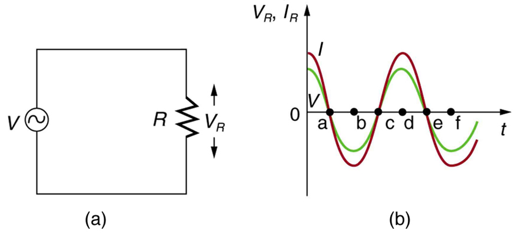
AC Voltage in a Resistor
When a sinusoidal voltage is applied to a resistor, the voltage is exactly in phase with the current—they have a \(0^o\) phase angle.
Paul Peter Urone (Professor Emeritus at California State University, Sacramento) and Roger Hinrichs (State University of New York, College at Oswego) with Contributing Authors: Kim Dirks (University of Auckland) and Manjula Sharma (University of Sydney). This work is licensed by OpenStax University Physics under aCreative Commons Attribution License (by 4.0).
Paul Peter Urone (Professor Emeritus at California State University, Sacramento) and Roger Hinrichs (State University of New York, College at Oswego) with Contributing Authors: Kim Dirks (University of Auckland) and Manjula Sharma (University of Sydney). This work is licensed by OpenStax University Physics under aCreative Commons Attribution License (by 4.0).
📖 OpenStax College Physics, Section 23.2. openstax.org · CC BY 4.0
- Calculate the impedance, phase angle, resonant frequency, power, power factor, voltage, and/or current in a RLC series circuit.
- Draw the circuit diagram for an RLC series circuit.
- Explain the significance of the resonant frequency.
When alone in an AC circuit, inductors, capacitors, and resistors all impede current. How do they behave when all three occur together? Interestingly, their individual resistances in ohms do not simply add. Because inductors and capacitors behave in opposite ways, they partially to totally cancel each other’s effect.Figureshows anRLCseries circuit with an AC voltage source, the behavior of which is the subject of this section. The crux of the analysis of anRLCcircuit is the frequency dependence of \(X_L\) and \(X_C\), and the effect they have on the phase of voltage versus current (established in the preceding section). These give rise to the frequency dependence of the circuit, with important “resonance” features that are the basis of many applications, such as radio tuners.
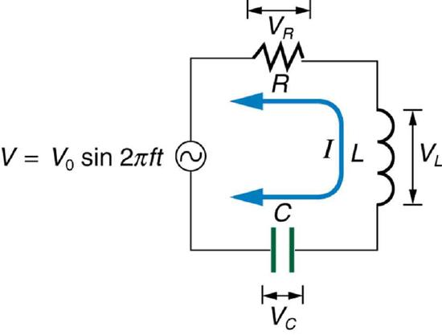
The combined effect of resistance \(R\), inductive reactance \(X_L\), and capacitive reactance \(X_C\) is defined to beimpedance, an AC analogue to resistance in a DC circuit. Current, voltage, and impedance in anRLCcircuit are related by an AC version of Ohm’s law:
Here \(I_0\) is the peak current, \(V_0\) the peak source voltage, and \(Z\) is the impedance of the circuit. The units of impedance are ohms, and its effect on the circuit is as you might expect: the greater the impedance, the smaller the current. To get an expression for \(Z\) in terms of \(R\), \(X_L\), and \(X_C\), we will now examine how the voltages across the various components are related to the source voltage. Those voltages are labeled \(V_R\), \(V_L\) and \(V_C\) inFigure.
Conservation of charge requires current to be the same in each part of the circuit at all times, so that we can say the currents in \(R\), \(L\), and \(C\) are equal and in phase. But we know from the preceding section that the voltage across the inductor \(V_L\) leads the current by one-fourth of a cycle, the voltage across the capacitor \(V_C\) follows the current by one-fourth of a cycle, and the voltage across the resistor \(V_R\) is exactly in phase with the current.Figureshows these relationships in one graph, as well as showing the total voltage around the circuit \(V = V_R + V_L + V_C\), where all four voltages are the instantaneous values. According to Kirchhoff’s loop rule, the total voltage around the circuit \(V\) is also the voltage of the source.
You can see fromFigurethat while \(V_R\) is in phase with the current, \(V_L\) leads by \(90^o\), and \(V_C\) follows by \(90^o\). Thus \(V_L\) and \(V_C\) are \(180^o\) out of phase (crest to trough) and tend to cancel, although not completely unless they have the same magnitude. Since the peak voltages are not aligned (not in phase), the peak voltage \(V_0\) of the source does not equal the sum of the peak voltages across \(R\), \(L\), and \(C\). The actual relationship is
\[V_0 = \sqrt{V_{0R}^2 + (V_{0L} - V_{0C})^2},\] where \(V_{0R}\), \(V_{0L}\), and \(V_{0C}\) are the peak voltages across \(R\), \(L\), and \(C\), respectively. Now, using Ohm’s law and definitions fromReactance, Inductive and Capacitive, we substitute \(V_0 = I_0Z\) into the above, as well as \(V_{0R} = I_0R\), \(V_{0L} = I_0X_L\), and \(V_{0C} = I_0X_C\), yielding
\[Z = \sqrt{R^2 + (X_L - X_C)^2},\] which is the impedance of anRLCseries AC circuit. For circuits without a resistor, take \(R = 0\); for those without an inductor, take \(X_L = 0\); and for those without a capacitor, take \(X_C = 0\).
![The figure shows graphs showing the relationships of the voltages in an RLC circuit to the current. It has five graphs on the left and two graphs on the right. The first graph on the right is for current I versus time t. Current is plotted along Y axis and time is along X axis. The curve is a smooth progressive sine wave. The second graph is on the right is for voltage V R versus time t. Voltage V R is plotted along Y axis and time is along X axis. The curve is a smooth progressive sine wave. The third graph is on the right is for voltage V L versus time t. Voltage V L is plotted along Y axis and time is along X axis. The curve is a smooth progressive cosine wave. The fourth graph is on the right is for voltage V C versus time t. Voltage V C is plotted along Y axis and time t is along X axis. The curve is a smooth progressive cosine wave starting from negative Y axis. The fifth graph shows the voltage V verses time t for the R L C circuit. Voltage V is plotted along Y axis and time t is along X axis. The curve is a smooth progressive sine wave starting from a point near to origin on negative X axis. The first and the fifth graphs are again shown on the right and their amplitudes and phases compared. The current graph is shown to have a lesser amplitude.](images/ch23/fig23-8-the-figure-shows-graphs-showing-the-rela.jpg)
AnRLCseries circuit has a \(40.0 \, \Omega\) resistor, a 3.00 mH inductor, and a \(5.00 \, \mu F\) capacitor. (a) Find the circuit’s impedance at 60.0 Hz and 10.0 kHz, noting that these frequencies and the values for \(L\) and \(C\) are the same as in[link]and[link]. (b) If the voltage source has \(V_{rms} = 120 \, V\), what is \(I_{rms}\) at each frequency?
For each frequency, we use \(Z = \sqrt{R^2 + (X_L - X_C)^2}\) to find the impedance and then Ohm’s law to find current. We can take advantage of the results of the previous two examples rather than calculate the reactances again.
At 60.0 Hz, the values of the reactances were found in[link]to be \(X_L = 1.13 \, \Omega\) and in[link]to be \(X_C = 531 \, \Omega\). Entering these and the given \(40.0 \, \Omega\) for resistance into \(Z = \sqrt{R^2 +(X_L - X_C)^2}\) yields
Similarly, at 10.0 kHz, \(X_L = 188 \, \Omega\) and \(X_C = 3.18 \, \Omega\), so that
In both cases, the result is nearly the same as the largest value, and the impedance is definitely not the sum of the individual values. It is clear that \(X_L\) dominates at high frequency and \(X_C\) dominates at low frequency.
The current \(I_{rms}\) can be found using the AC version of Ohm’s law in Equation \(I_{rms} = V_{rms}/Z\).
Finally, at 10.0 kHz we find
The current at 60.0 Hz is the same (to three digits) as found for the capacitor alone in[link]. The capacitor dominates at low frequency. The current at 10.0 kHz is only slightly different from that found for the inductor alone in[link]. The inductor dominates at high frequency.
How does anRLCcircuit behave as a function of the frequency of the driving voltage source? Combining Ohm’s law, \(I_{rms} = V_{rms}/Z\), and the expression for impedance \(Z\) from \(Z = \sqrt{R^2 + (X_L - X_C)^2}\) gives
The reactances vary with frequency, with \(X_L\) large at high frequencies and \(X_C\) large at low frequencies, as we have seen in three previous examples. At some intermediate frequency \(f_0\), the reactances will be equal and cancel, giving \(Z = R\) —this is a minimum value for impedance, and a maximum value for \(I_{rms}\) results. We can get an expression for \(f_0\) by taking
Substituting the definitions of \(X_L\) and \(X_C\),
Solving this expression for \(f_0\) yields
\[f_0 = \dfrac{1}{2\pi \sqrt{LC}},\] where \(F_0\) is theresonant frequencyof anRLCseries circuit. This is also thenatural frequencyat which the circuit would oscillate if not driven by the voltage source. At \(f_0\), the effects of the inductor and capacitor cancel, so that \(Z = R\), and \(I_{rms}\) is a maximum.
Resonance in AC circuits is analogous to mechanical resonance, where resonance is defined to be a forced oscillation—in this case, forced by the voltage source—at the natural frequency of the system. The receiver in a radio is anRLCcircuit that oscillates best at its \(f_0\). A variable capacitor is often used to adjust \(f_0\) to receive a desired frequency and to reject others.Figureis a graph of current as a function of frequency, illustrating a resonant peak in \(I_{rms}\) at \(f_0\). The two curves are for two different circuits, which differ only in the amount of resistance in them. The peak is lower and broader for the higher-resistance circuit. Thus the higher-resistance circuit does not resonate as strongly and would not be as selective in a radio receiver, for example.
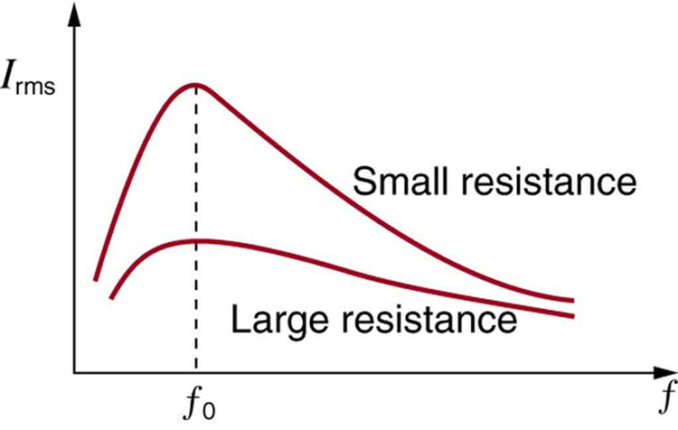
For the sameRLCseries circuit having a \(40.0 \, \Omega\) resistor, a 3.00 mH inductor, and a \(5.00 \, \mu F\) capacitor: (a) Find the resonant frequency. (b) Calculate \(I_{rms}\) at resonance if \(V_{rms}\) is 120 V.
The resonant frequency is found by using the expression in \(f_0 = \frac{1}{2\pi \sqrt{LC}}\).
The current at that frequency is the same as if the resistor alone were in the circuit.
Entering the given values for \(L\) and \(C\) into the expression given for \(f_0\) in \(f_0 = \frac{1}{2\pi \sqrt{LC}}\) yields
We see that the resonant frequency is between 60.0 Hz and 10.0 kHz, the two frequencies chosen in earlier examples. This was to be expected, since the capacitor dominated at the low frequency and the inductor dominated at the high frequency. Their effects are the same at this intermediate frequency.
The current is given by Ohm’s law. At resonance, the two reactances are equal and cancel, so that the impedance equals the resistance alone. Thus,
At resonance, the current is greater than at the higher and lower frequencies considered for the same circuit in the preceding example.
If current varies with frequency in anRLCcircuit, then the power delivered to it also varies with frequency. But the average power is not simply current times voltage, as it is in purely resistive circuits. As was seen inFigure, voltage and current are out of phase in anRLCcircuit. There is aphase angle\(\phi\) between the source voltage \(V\) and the current \(I\), which can be found from
For example, at the resonant frequency or in a purely resistive circuit \(Z = R\), so that \(cos \, \phi = 1\). This implies that \(\phi = 0^o\) and that voltage and current are in phase, as expected for resistors. At other frequencies, average power is less than at resonance. This is both because voltage and current are out of phase and because \(I_{rms}\) is lower. The fact that source voltage and current are out of phase affects the power delivered to the circuit. It can be shown that theaverage poweris
\[P_{ave} = I_{rms}V_{rms}cos \, \phi,\] thus \(cos \, \phi\) is called thepower factor, which can range from 0 to 1. Power factors near 1 are desirable when designing an efficient motor, for example. At the resonant frequency, \(cos \, \phi = 1\).
For the sameRLCseries circuit having a \(40.0 \, \Omega\) resistor, a 3.00 mH inductor, a \(5.00 \, \mu F\) capacitor, and a voltage source with a \(V_{rms}\) of 120 V: (a) Calculate the power factor and phase angle for \(f = 60.0 \, Hz.\)
(b) What is the average power at 50.0 Hz? (c) Find the average power at the circuit’s resonant frequency.
Strategy and Solution for (a)
The power factor at 60.0 Hz is found from
We know \(Z = 531 \, \Omega \) fromExample, so that
This small value indicates the voltage and current are significantly out of phase. In fact, the phase angle is
The phase angle is close to \(90^o\), consistent with the fact that the capacitor dominates the circuit at this low frequency (a pureRCcircuit has its voltage and current \(90^o\) out of phase).
Strategy and Solution for (b)
The average power at 60.0 Hz is
Strategy and Solution for (c)
At the resonant frequency, we know \(cos \, \phi = 1\), and \(I_{rms}\) was found to be 6.00 A inExample. Thus,
\[P_{ave} = (3.00 \, A)(120 \, V)(1) = 360 \, W\)
at resonance (1.30 kHz)
Both the current and the power factor are greater at resonance, producing significantly greater power than at higher and lower frequencies.
Power delivered to anRLCseries AC circuit is dissipated by the resistance alone. The inductor and capacitor have energy input and output but do not dissipate it out of the circuit. Rather they transfer energy back and forth to one another, with the resistor dissipating exactly what the voltage source puts into the circuit. This assumes no significant electromagnetic radiation from the inductor and capacitor, such as radio waves. Such radiation can happen and may even be desired, as we will see in the next chapter on electromagnetic radiation, but it can also be suppressed as is the case in this chapter. The circuit is analogous to the wheel of a car driven over a corrugated road as shown inFigure. The regularly spaced bumps in the road are analogous to the voltage source, driving the wheel up and down. The shock absorber is analogous to the resistance damping and limiting the amplitude of the oscillation. Energy within the system goes back and forth between kinetic (analogous to maximum current, and energy stored in an inductor) and potential energy stored in the car spring (analogous to no current, and energy stored in the electric field of a capacitor). The amplitude of the wheels’ motion is a maximum if the bumps in the road are hit at the resonant frequency.
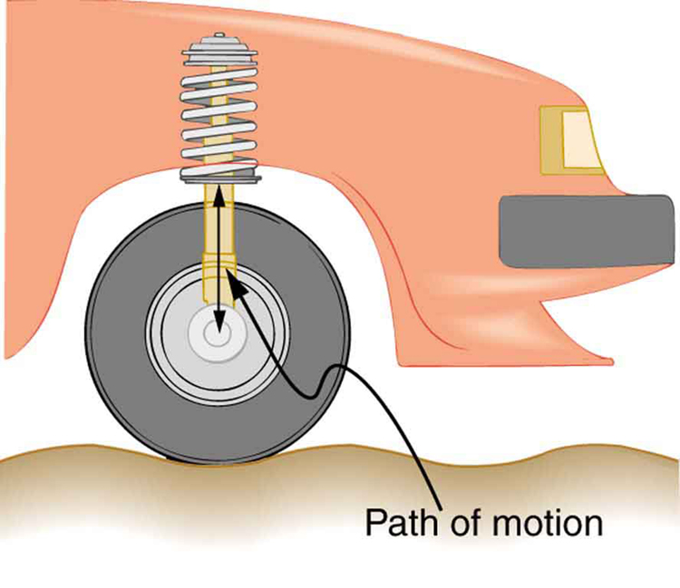
A pureLCcircuit with negligible resistance oscillates at \(f_0\), the same resonant frequency as anRLCcircuit. It can serve as a frequency standard or clock circuit—for example, in a digital wristwatch. With a very small resistance, only a very small energy input is necessary to maintain the oscillations. The circuit is analogous to a car with no shock absorbers. Once it starts oscillating, it continues at its natural frequency for some time.Figureshows the analogy between anLCcircuit and a mass on a spring.
![The figure describes four stages of an L C oscillation circuit compared to a mass oscillating on a spring. Part a of the figure shows a mass attached to a horizontal spring. The spring is attached to a fixed support on the left. The mass is at rest as shown by velocity v equals zero. The energy of the spring is shown as potential energy. This is compared with a circuit containing a capacitor C and inductor L connected together. The energy is shown as stored in the electric field E of the capacitor between the plates. One plate is shown to have a negative polarity and other plate is shown to have a positive polarity. Part b of the figure shows a mass attached to a horizontal spring which is attached to a fixed support on the left. The mass is shown to move horizontal toward the fixed support with velocity v. The energy here is stored as the kinetic energy of the spring. This is compared with a circuit containing a capacitor C and inductor L connected together. A current is shown in the circuit and energy is stored as magnetic field B in the inductor. Part c of the figure shows a mass attached to a horizontal spring which is attached to a fixed support on the left. The spring is shown as not stretched and the energy is shown as potential energy of the spring. The mass is show to have displaced toward left. This is compared with a circuit containing a capacitor C and inductor L connected together. The energy is shown as stored in the electric field E of the capacitor between the plates. One plate is shown to have a negative polarity and other plate is shown to have a positive polarity. But the polarities are reverse of the first case in part a. Part d of the figure shows a mass attached to a horizontal spring which is attached to a fixed support on the left. The mass is shown to move toward right with velocity v. the energy of the spring is kinetic energy. This is compared with a circuit containing a capacitor C and inductor L connected together. A current is shown in the circuit opposite to that in part b and energy is stored as magnetic field B in the inductor.](images/ch23/fig23-11-the-figure-describes-four-stages-of-an-l.jpg)
PHET EXPLORATIONS: CIRCUIT CONSTRUCTION KIT (AC + DC), VIRTUAL LAB
Build circuits with capacitors, inductors, resistors and AC or DC voltage sources, and inspect them using lab instruments such as voltmeters and ammeters.

📖 OpenStax College Physics, Section 23.3. openstax.org · CC BY 4.0
- Calculate the flux of a uniform magnetic field through a loop of arbitrary orientation.
- Describe methods to produce an electromotive force (emf) with a magnetic field or magnet and a loop of wire.
The apparatus used by Faraday to demonstrate that magnetic fields can create currents is illustrated in Figure . When the switch is closed, a magnetic field is produced in the coil on the top part of the iron ring and transmitted to the coil on the bottom part of the ring. The galvanometer is used to detect any current induced in the coil on the bottom. It was found that each time the switch is closed, the galvanometer detects a current in one direction in the coil on the bottom. (You can also observe this in a physics lab.) Each time the switch is opened, the galvanometer detects a current in the opposite direction. Interestingly, if the switch remains closed or open for any length of time, there is no current through the galvanometer.Closing and opening the switchinduces the current. It is thechangein magnetic field that creates the current. More basic than the current that flows is theemfthat causes it. The current is a result of anemf induced by a changing magnetic field, whether or not there is a path for current to flow.
![The picture shows Faraday’s apparatus for demonstrating that a magnetic field can produce a current. It consists of a cylinder shaped battery. The positive end of the battery is connected to an open switch. There is a ring shaped iron core consisting of a set of coils one on the top and another at the bottom. The other end of the switch is connected to one end of the top coil. The other end of the top coil is connected back to the battery. Both the ends of the bottom coil are shown connected across a galvanometer box which shows a null deflection.](images/ch23/fig23-13-the-picture-shows-faradays-apparatus-for.jpg)
An experiment easily performed and often done in physics labs is illustrated in Figure . An emf is induced in the coil when a bar magnet is pushed in and out of it. Emfs of opposite signs are produced by motion in opposite directions, and the emfs are also reversed by reversing poles. The same results are produced if the coil is moved rather than the magnet—it is the relative motion that is important. The faster the motion, the greater the emf, and there is no emf when the magnet is stationary relative to the coil.
![The diagram shows five stages of an experiment done by moving a magnet relative to a coil and measuring the e m f produced. The first stage of the experiment shows a wire coil with two loops connected across a galvanometer. The loop is in horizontal plane. A cylindrical rod shaped magnet is moved upward through the loop with the north pole of the magnet facing the loop and the South Pole away from the loop. The magnetic lines of force of the magnet are shown to emerge out from the North Pole and intersect the coil. A current is shown to be induced in the coil in clockwise direction. The galvanometer needle is shown to deflect toward right. The second stage of the experiment shows the next state of the first stage of the experiment. The cylindrical rod shaped magnet is now moved downward away from the loop with the north pole of the magnet facing the loop and South Pole away from the loop. The magnetic lines of force of the magnet are shown to emerge out from the North Pole and intersect the coil. A current is shown to be induced in the coil in anti clockwise direction. The galvanometer needle is shown to deflect toward left. The third stage of the experiment shows a wire coil with two loops connected across a galvanometer. The loop is in horizontal plane. A cylindrical rod shaped magnet is moved upward through the loop with the south pole of the magnet facing the loop and the North Pole away from the loop. The magnetic lines of force of the magnet are shown to merge into the South Pole and intersect the coil. A current is shown to be induced in the coil in anti clockwise direction. The galvanometer needle is shown to deflect toward left. The fourth stage of the experiment shows the next state of the third stage of the experiment. The cylindrical rod shaped magnet is now moved downward away from the loop with the south pole of the magnet facing the loop and the North Pole away from the loop. The magnetic lines of force of the magnet are shown to merge into the South Pole and intersect the coil. A current is shown to be induced in the coil in clockwise direction. The galvanometer needle is shown to deflect toward right. The fifth stage of the experiment shows a wire coil with two loops connected across a galvanometer. The loop is in horizontal plane. A cylindrical rod shaped magnet is held stationary near the loop with the north pole of the magnet facing the loop and south away from the loop. The magnetic lines of force of the magnet are shown to emerge out from the North Pole and intersect the coil. No current is induced in the coil. The galvanometer needle does not deflect.](images/ch23/fig23-14-the-diagram-shows-five-stages-of-an-expe.jpg)
The method of inducing an emf used in most electric generators is shown in Figure . A coil is rotated in a magnetic field, producing an alternating current emf, which depends on rotation rate and other factors that will be explored in later sections. Note that the generator is remarkably similar in construction to a motor (another symmetry).
![The figure shows a schematic diagram of an electric generator. It consists of a rotating rectangular coil placed between the two poles of a permanent magnet shown as two rectangular blocks curved on side facing the coil. The magnetic field B is shown pointing from the North to the South Pole. The two ends of this coil are connected to the two small rings. The two conducting carbon brushes are kept pressed separately on both the rings. The coil is attached to an axle with a handle at the other end. The axle may be mechanically rotated from outside to rotate the coil inside the magnetic field. Outer ends of the two brushes are connected to the galvanometer. A current is shown to flow in the coil in anti clockwise direction and the galvanometer shows a deflection.](images/ch23/fig23-15-the-figure-shows-a-schematic-diagram-of-.jpg)
So we see that changing the magnitude or direction of a magnetic field produces an emf. Experiments revealed that there is a crucial quantity called themagnetic flux, \(\Phi\), given by
where \(B\) is the magnetic field strength over an area \(A\), at an angle \(\theta\) with the perpendicular to the area as shown in Figure .
Any change in magnetic flux \(\Phi\) induces an emf.This process is defined to beelectromagnetic induction. Units of magnetic flux \(\Phi\) are \(T \cdot m^{2}\). As seen in Figure 4, \(B\cos{\theta} = B_{\perp}\), which is the component of \(B\) perpendicular to the area \(A\). Thus magnetic flux is \(\Phi = B_{\perp}A\), the product of the area and the component of the magnetic field perpendicular to it.
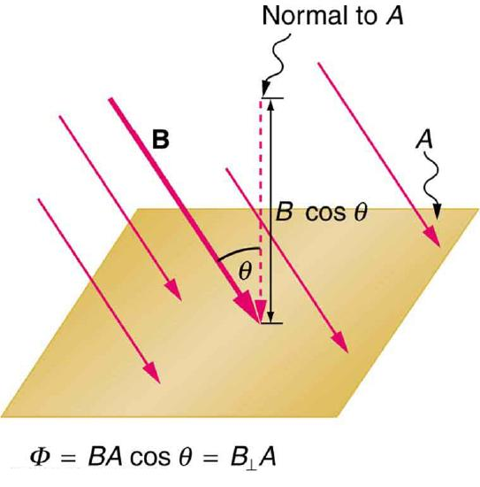
All induction, including the examples given so far, arises from some change in magnetic flux \(\Phi\). For example, Faraday changed \(B\) and hence \(\Phi\) when opening and closing the switch in his apparatus (shown in Figure . This is also true for the bar magnet and coil shown in Figure . When rotating the coil of a generator, the angle \(\theta\) and, hence, \(\Phi\) is changed. Just how great an emf and what direction it takes depend on the change in \(\Phi\) and how rapidly the change is made, as examined in the next section.
📖 OpenStax College Physics, Section 23.4. openstax.org · CC BY 4.0
- Calculate emf, current, and magnetic fields using Faraday’s Law.
- Explain the physical results of Lenz’s Law
Faraday’s experiments showed that the emf induced by a change in magnetic flux depends on only a few factors. First, emf is directly proportional to the change in flux \(\Delta \Phi\). Second, emf is greatest when the change in time \(\Delta t\) is smallest—that is, emf is inversely proportional to \(\Delta t\). Finally, if a coil has \(N\) turns, an emf will be produced that is \(N\) times greater than for a single coil, so that emf is directly proportional to \(N\). The equation for the emf induced by a change in magnetic flux is \[emf = -N \frac{\Delta \Phi}{\Delta t}.\label{23.3.1}\] This relationship is known asFaraday's law of induction. The units for emf are volts, as is usual.
The minus sign in Faraday’s law of induction is very important. The minus means thatthe emf creates a current I and magnetic field B that oppose the change in flux\(\Delta \Phi\) -- this is known as Lenz's law. The direction (given by the minus sign) of the emfis so important that it is calledLenz's lawafter the Russian Heinrich Lenz (1804–1865), who, like Faraday and Henry,independently investigated aspects of induction. Faraday was aware of the direction, but Lenz stated it so clearly that he is credited for its discovery. (See Figure 1.)
![Part a of the figure shows a bar magnet held horizontal and moved into a coil held in the same plane. The magnet is moved in such a way that the north pole of the magnet is shown to face the coil. The magnetic lines of force are shown to emerge out from the North Pole. The magnetic field associated with the bar magnet is given as B mag. The strength of the magnetic field increases in the coil. The current induced in the coil I creates another field B coil, in the opposite direction of the bar magnet to oppose the increase. So B mag and B coil are in opposite directions. In part b of the diagram, the magnet is moved away from the coil. The magnet is moved in such a way that the north pole of the magnet is shown to face the coil. The magnetic lines of force are shown to emerge out from the North Pole. The magnetic field associated with the bar magnet is given as B mag. The current induced in the coil I creates another field B coil, in the same direction as the field of the bar magnet. So B mag and B coil are in same directions. Part c of the figure shows a bar magnet held horizontal and moved into a coil held in the same plane. The magnet is moved in such a way that the south pole of the magnet is shown to face the coil. The magnetic lines of force are shown to merge into the South Pole. The magnetic field associated with the bar magnet is given as B mag. The current induced in the coil I, creates another field B coil, in the opposite direction of field of the bar magnet. So B mag and B coil are in opposite directions.](images/ch23/fig23-17-part-a-of-the-figure-shows-a-bar-magnet-.jpg)
PROBLEM-SOLVING STRATEGY FOR LENZ'S LAW:
To use Lenz’s law to determine the directions of the induced magnetic fields, currents, and emfs:
For practice, apply these steps to the situations shown in Figure 1 and to others that are part of the following text material.
There are many applications of Faraday’s Law of induction, as we will explore in this chapter and others. At this juncture, let us mention several that have to do with data storage and magnetic fields. A very important application has to do with audio and videorecording tapes. A plastic tape, coated with iron oxide, moves past a recording head. This recording head is basically a round iron ring about which is wrapped a coil of wire—an electromagnet (Figure 2). A signal in the form of a varying input current from a microphone or camera goes to the recording head. These signals (which are a function of the signal amplitude and frequency) produce varying magnetic fields at the recording head. As the tape moves past the recording head, the magnetic field orientations of the iron oxide molecules on the tape are changed thus recording the signal. In the playback mode, the magnetized tape is run past another head, similar in structure to the recording head. The different magnetic field orientations of the iron oxide molecules on the tape induces an emf in the coil of wire in the playback head. This signal then is sent to a loudspeaker or video player.
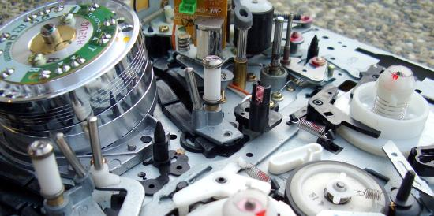
Similar principles apply to computer hard drives, except at a much faster rate. Here recordings are on a coated, spinning disk. Read heads historically were made to work on the principle of induction. However, the input information is carried in digital rather than analog form – a series of 0’s or 1’s are written upon the spinning hard drive. Today, most hard drive readout devices do not work on the principle of induction, but use a technique known asgiant magnetoresistance.(The discovery that weak changes in a magnetic field in a thin film of iron and chromium could bring about much larger changes in electrical resistance was one of the first large successes of nanotechnology.) Another application of induction is found on the magnetic stripe on the back of your personal credit card as used at the grocery store or the ATM machine. This works on the same principle as the audio or video tape mentioned in the last paragraph in which a head reads personal information from your card.
Another application of electromagnetic induction is when electrical signals need to be transmitted across a barrier. Consider thecochlear implantshown below. Sound is picked up by a microphone on the outside of the skull and is used to set up a varying magnetic field. A current is induced in a receiver secured in the bone beneath the skin and transmitted to electrodes in the inner ear. Electromagnetic induction can be used in other instances where electric signals need to be conveyed across various media.
Another contemporary area of research in which electromagnetic induction is being successfully implemented (and with substantial potential) is transcranial magnetic simulation. A host of disorders, including depression and hallucinations can be traced to irregular localized electrical activity in the brain. Intranscranial magnetic stimulation, a rapidly varying and very localized magnetic field is placed close to certain sites identified in the brain. Weak electric currents are induced in the identified sites and can result in recovery of electrical functioning in the brain tissue.
Sleep apnea(“the cessation of breath”) affects both adults and infants (especially premature babies and it may be a cause of sudden infant deaths [SID]). In such individuals, breath can stop repeatedly during their sleep. A cessation of more than 20 seconds can be very dangerous. Stroke, heart failure, and tiredness are just some of the possible consequences for a person having sleep apnea. The concern in infants is the stopping of breath for these longer times. One type of monitor to alert parents when a child is not breathing uses electromagnetic induction. A wire wrapped around the infant’s chest has an alternating current running through it. The expansion and contraction of the infant’s chest as the infant breathes changes the area through the coil. A pickup coil located nearby has an alternating current induced in it due to the changing magnetic field of the initial wire. If the child stops breathing, there will be a change in the induced current, and so a parent can be alerted.
MAKING CONNECTIONS: CONSERVATION OF ENERGY:
Lenz’s law is a manifestation of the conservation of energy. The induced emf produces a current that opposes the change in flux, because a change in flux means a change in energy. Energy can enter or leave, but not instantaneously. Lenz’s law is a consequence. As the change begins, the law says induction opposes and, thus, slows the change. In fact, if the induced emf were in the same direction as the change in flux, there would be a positive feedback that would give us free energy from no apparent source—conservation of energy would be violated.
Calculate the magnitude of the induced emf when the magnet in Figure 1a is thrust into the coil, given the following information: the single loop coil has a radius of 6.00 cm and the average value of \(B\cos{\theta}\) (this is given, since the bar magnet’s field is complex) increases from 0.0500 T to 0.250 T in 0.100 s.
To find themagnituteof emf, we use Faraday’s law of induction as stated by \(emf = -N\frac{\Delta \Phi}{\Delta t}\), but without the minus sign that indicates direction: \[emf = N\frac{\Delta \Phi}{\Delta t}.\]
We are given that \(N = 1\) and \(\Delta t = 0.100 s\) but we must determine the change in flux \(\Delta \Phi\) before we can find emf. Since the area of the loop is fixed, we see that \[\Delta \Phi \left(BA\cos{\theta}\right) = A\Delta \left(B\cos{\theta}\right).\label{23.3.2}\] Now \(\Delta \left(B\cos{\theta}\right) = 0.200 T\), since it was given that \(B\cos{\theta}\) changes from 0.0500 to 0.250 T. The area of the loop is \(A = \pi r^{2} = \left(3.14...\right)\left(0.060 m\right)^{2} = 1.13 \times 10^{-2} m^{2}\). Thus, \[\Delta \Phi = \left(1.13 \times 10^{-2} m^{2}\right)\left(0.200 T\right).\] Entering the determined values into the expression for emf gives \[Emf = N\frac{\Delta \Phi}{\Delta t} = \frac{\left(1.13 \times 10^{-2}m^{2}\right)\left(0.200 T\right)}{0.100 s} = 22.6mV.\]
While this is an easily measured voltage, it is certainly not large enough for most practical applications. More loops in the coil, a stronger magnet, and faster movement make induction the practical source of voltages that it is.
📖 OpenStax College Physics, Section 23.5. openstax.org · CC BY 4.0
- Calculate emf, force, magnetic field, and work due to the motion of an object in a magnetic field.
As we have seen, any change in magnetic flux induces an emf opposing that change—a process known as induction. Motion is one of the major causes of induction. For example, a magnet moved toward a coil induces an emf, and a coil moved toward a magnet produces a similar emf. In this section, we concentrate on motion in a magnetic field that is stationary relative to the Earth, producing what is loosely calledmotional emf.
One situation where motional emf occurs is known as the Hall effect and has already been examined. Charges moving in a magnetic field experience the magnetic force \(F = qvB\sin{\theta}\), which moves opposite charges in opposite directions and produces an \(emf = Blv\). We saw that the Hall effect has applications, including measurements of \(B\) and \(v\). We will now see that the Hall effect is one aspect of the broader phenomenon of induction, and we will find that motional emf can be used as a power source.
Consider the situation shown in Figure . A rod is moved at a speed \(v\) along a pair of conducting rails separated by a distance \(l\) in a uniform magnetic field \(B\). The rails are stationary relative to \(B\) and are connected to a stationary resistor \(R\). The resistor could be anything from a light bulb to a voltmeter. Consider the area enclosed by the moving rod, rails, and resistor. \(B\) is perpendicular to this area, and the area is increasing as the rod moves. Thus the magnetic flux enclosed by the rails, rod, and resistor is increasing. When flux changes, an emf is induced according to Faraday’s law of induction.
![Part a of the figure shows two parallel rails held horizontal at distance l apart in a uniform magnetic field B in, directed toward the plane of the paper. A resistance R is connected at one of its ends. A rod is kept vertical at the middle on the rails and moved toward the right for a distance delta x with a velocity v. the velocity v is given by delta x divided by delta t. The rectangular area enclosed between the initial position of the rod and the final position after a movement of delta x is given as delta A equals l multiplied by delta x. There is a current induced, I in the upper rail toward left. The upper end of the rod is shown positive and the lower end negative. Part b of the diagram shows the same arrangement as in part a. Two parallel rails held horizontal at distance l apart in a uniform magnetic field B in, directed toward the plane of the paper. A resistance is connected at one of its ends. A rod is kept vertical at the middle on the rails and moved toward the right a distance delta x with a velocity v. Lenz’s law is applied and the direction of induced field and current is shown. There is a current induced I in the upper rail toward left. The upper end of the rod is shown positive and the lower end negative. The induced field B ind is shown in the area enclosed between the resistance R, the rod and the rails. The induced field is opposite to the applied field. The induced field points away from the paper. The flux phi is shown increasing in the enclosed area. A picture of the right hand with its fingers and thumb stretched is shown toward the right of the image to explain the right hand rule. An equivalent circuit of the above figure is shown to be equivalent to a cell of e m f connected across a resistance R.](images/ch23/fig23-20-part-a-of-the-figure-shows-two-parallel-.jpg)
To find the magnitude of emf induced along the moving rod, we use Faraday’s law of induction without the sign:
Here and below, “emf” implies the magnitude of the emf. In this equation, \(N = 1\) and the flux \(\Phi = BA\cos{\theta}\). We have \(\theta = 0^{\circ}\) and \(\cos{\theta} = 1\), since \(B\) is perpendicular to \(A\). Now \(\Delta \Phi = \Delta \left(BA\right) = B \Delta A\), since \(B\) is uniform. Note that the area swept out by the rod is \(\Delta A = l\Delta x\). Entering these quantities into the expression for emf yields
Finally, note that \(\Delta x/ \Delta t = v\), the velocity of the rod. Entering this into the last expression shows that
is the motional emf. This is the same expression given for the Hall effect previously..
MAKING CONNECTIONS: UNIFICATION OF FORCES:
There are many connections between the electric force and the magnetic force. The fact that a moving electric field produces a magnetic field and, conversely, a moving magnetic field produces an electric field is part of why electric and magnetic forces are now considered to be different manifestations of the same force. This classic unification of electric and magnetic forces into what is called the electromagnetic force is the inspiration for contemporary efforts to unify other basic forces.
To find the direction of the induced field, the direction of the current, and the polarity of the induced emf, we apply Lenz’s law as explained in "Faraday's Law of Induction: Lenz's Law" (Figure \(\PageIndex{1b}\)).
Flux is increasing, since the area enclosed is increasing. Thus the induced field must oppose the existing one and be out of the page. And so the RHR-2 requires thatIbe counterclockwise, which in turn means the top of the rod is positive as shown.
Motional emf also occurs if the magnetic field moves and the rod (or other object) is stationary relative to the Earth (or some observer). We have seen an example of this in the situation where a moving magnet induces an emf in a stationary coil. It is the relative motion that is important. What is emerging in these observations is a connection between magnetic and electric fields. A moving magnetic field produces an electric field through its induced emf. We already have seen that a moving electric field produces a magnetic field—moving charge implies moving electric field and moving charge produces a magnetic field.
Motional emfs in the Earth’s weak magnetic field are not ordinarily very large, or we would notice voltage along metal rods, such as a screwdriver, during ordinary motions. For example, a simple calculation of the motional emf of a 1 m rod moving at 3.0 m/s perpendicular to the Earth’s field gives \(emf = Blv = \left(5.0 \times 10^{-5} T\right)\left(1.0 m\right)\left(3.0 m/s\right) = 150 \mu V\). This small value is consistent with experience. There is a spectacular exception, however. In 1992 and 1996, attempts were made with the space shuttle to create large motional emfs. The Tethered Satellite was to be let out on a 20 km length of wire as shown in Figure 2, to create a 5 kV emf by moving at orbital speed through the Earth’s field. This emf could be used to convert some of the shuttle’s kinetic and potential energy into electrical energy if a complete circuit could be made. To complete the circuit, the stationary ionosphere was to supply a return path for the current to flow. (The ionosphere is the rarefied and partially ionized atmosphere at orbital altitudes. It conducts because of the ionization. The ionosphere serves the same function as the stationary rails and connecting resistor in Figure 1, without which there would not be a complete circuit.) Drag on the current in the cable due to the magnetic force \(F = IlB\sin{\theta}\) does the work that reduces the shuttle’s kinetic and potential energy and allows it to be converted to electrical energy. The tests were both unsuccessful. In the first, the cable hung up and could only be extended a couple of hundred meters; in the second, the cable broke when almost fully extended. The example below indicates feasibility in principle.
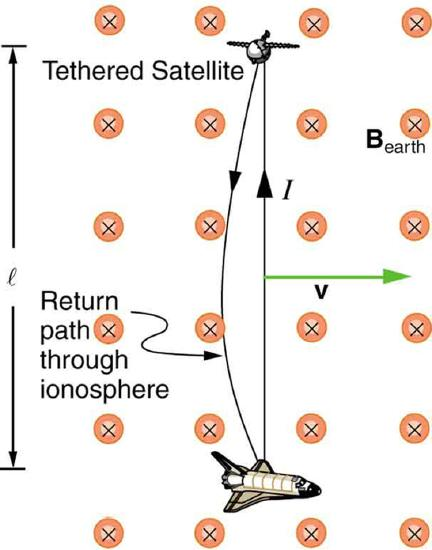
Calculate the motional emf induced along a 20.0 km long conductor moving at an orbital speed of 7.80 km/s perpendicular to the Earth’s \(5.00 \times 10^{-5} T\) magnetic field.
This is a straightforward application of the expression for motional emf--\(emf = Blv\).
Entering the given values into \(emf = Blv\) gives \[emf = Blv\] \[= \left(5.00 \times 10^{-5} T\right)\left(2.0 \times 10^{4} m\right)\left(7.80 \times 10^{3} m/s\right)\] \[= 7.80 \times 10^{3} V.\]
The value obtained is greater than the 5 kV measured voltage for the shuttle experiment, since the actual orbital motion of the tether is not perpendicular to the Earth’s field. The 7.80 kV value is the maximum emf obtained when \(\theta = 90^{\circ}\) and \(\sin{\theta} = 1\).
📖 OpenStax College Physics, Section 23.6. openstax.org · CC BY 4.0
- Explain the magnitude and direction of an induced eddy current, and the effect this will have on the object it is induced in.
- Describe several applications of magnetic damping.
As discussed in "Motional Emf," motional emf is induced when a conductor moves in a magnetic field or when a magnetic field moves relative to a conductor. If motional emf can cause a current loop in the conductor, we refer to that current as aneddy current. Eddy currents can produce significant drag, calledmagnetic damping, on the motion involved. Consider the apparatus shown in Figure , which swings a pendulum bob between the poles of a strong magnet. (This is another favorite physics lab activity.) If the bob is metal, there is significant drag on the bob as it enters and leaves the field, quickly damping the motion. If, however, the bob is a slotted metal plate, as shown in Figure \(\PageIndex{1b}\), there is a much smaller effect due to the magnet. There is no discernible effect on a bob made of an insulator. Why is there drag in both directions, and are there any uses for magnetic drag?
![The figure describes an experiment on exploring the effect of eddy currents. Part a of the figure shows a metal pendulum plate swinging between the pole pieces of a magnet. The pendulum is attached at one end to a pivot. Eddy currents are shown as small swirls on the surface of the plate. The oscillation is shown as damped by smaller displacement of the plate marked as S. Part b of the figure shows a slotted metal pendulum plate swinging between the pole pieces of a magnet. The pendulum is attached at one end to a pivot. Eddy currents are less effective. The oscillation is shown with a larger displacement of the plate marked as S, than the displacement in part a. Part c of the figure shows a non conducting pendulum plate swinging between the pole pieces of a magnet. The pendulum is attached at one end to a pivot. Extremely small currents are induced. The oscillation is shown with a larger displacement of the plate marked as S, than the displacement in part a.](images/ch23/fig23-22-the-figure-describes-an-experiment-on-ex.jpg)
Figure shows what happens to the metal plate as it enters and leaves the magnetic field. In both cases, it experiences a force opposing its motion. As it enters from the left, flux increases, and so an eddy current is set up (Faraday’s law) in the counterclockwise direction (Lenz’s law), as shown. Only the right-hand side of the current loop is in the field, so that there is an unopposed force on it to the left (RHR-1). When the metal plate is completely inside the field, there is no eddy current if the field is uniform, since the flux remains constant in this region. But when the plate leaves the field on the right, flux decreases, causing an eddy current in the clockwise direction that, again, experiences a force to the left, further slowing the motion. A similar analysis of what happens when the plate swings from the right toward the left shows that its motion is also damped when entering and leaving the field.
![The figure shows a more detailed description of a conducting plate attached to a pivot oscillating between the pole pieces of a magnet. A cross section is shown in the figure. The direction of magnetic field of the magnet is toward the plane of the paper. The direction of force, current and magnetic field at two extreme positions of the pendulum are marked. The direction of B is always into the paper. Based on the direction of force, the current direction of the pendulum at the two ends is marked as per the right hand rule. The eddy current on the plate is in anti clock wise direction in the left end and clock wise direction in the right end.](images/ch23/fig23-23-the-figure-shows-a-more-detailed-descrip.jpg)
When a slotted metal plate enters the field, as shown in Figure an emf is induced by the change in flux, but it is less effective because the slots limit the size of the current loops. Moreover, adjacent loops have currents in opposite directions, and their effects cancel. When an insulating material is used, the eddy current is extremely small, and so magnetic damping on insulators is negligible. If eddy currents are to be avoided in conductors, then they can be slotted or constructed of thin layers of conducting material separated by insulating sheets.
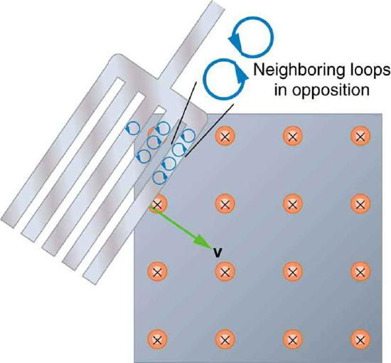
One use of magnetic damping is found in sensitive laboratory balances. To have maximum sensitivity and accuracy, the balance must be as friction-free as possible. But if it is friction-free, then it will oscillate for a very long time. Magnetic damping is a simple and ideal solution. With magnetic damping, drag is proportional to speed and becomes zero at zero velocity. Thus the oscillations are quickly damped, after which the damping force disappears, allowing the balance to be very sensitive (Figure . In most balances, magnetic damping is accomplished with a conducting disc that rotates in a fixed field.
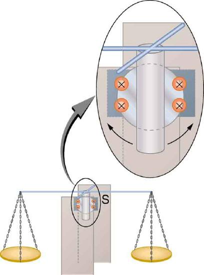
Since eddy currents and magnetic damping occur only in conductors, recycling centers can use magnets to separate metals from other materials. Trash is dumped in batches down a ramp, beneath which lies a powerful magnet. Conductors in the trash are slowed by magnetic damping while nonmetals in the trash move on, separating from the metals (Figure . This works for all metals, not just ferromagnetic ones. A magnet can separate out the ferromagnetic materials alone by acting on stationary trash.
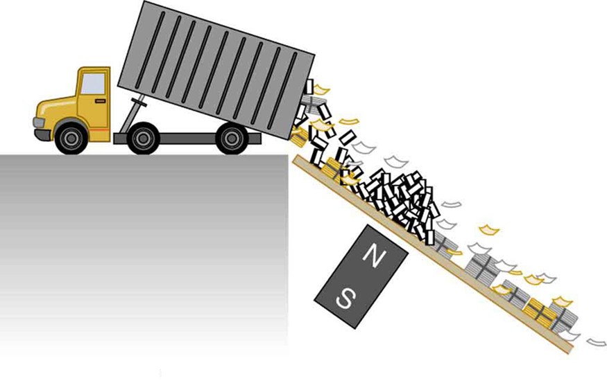
Other major applications of eddy currents are in metal detectors and braking systems in trains and roller coasters. Portable metal detectors (Figure \(\PageIndex{1=6}\)) consist of a primary coil carrying an alternating current and a secondary coil in which a current is induced. An eddy current will be induced in a piece of metal close to the detector which will cause a change in the induced current within the secondary coil, leading to some sort of signal like a shrill noise.
Braking using eddy currents is safer because factors such as rain do not affect the braking and the braking is smoother. However, eddy currents cannot bring the motion to a complete stop, since the force produced decreases with speed. Thus, speed can be reduced from say 20 m/s to 5 m/s, but another form of braking is needed to completely stop the vehicle. Generally, powerful rare earth magnets such as neodymium magnets are used in roller coasters. Figure shows rows of magnets in such an application. The vehicle has metal fins (normally containing copper) which pass through the magnetic field slowing the vehicle down in much the same way as with the pendulum bob shown in Figure .
Induction cooktops have electromagnets under their surface. The magnetic field is varied rapidly producing eddy currents in the base of the pot, causing the pot and its contents to increase in temperature. Induction cooktops have high efficiencies and good response times but the base of the pot needs to be ferromagnetic, iron or steel for induction to work.
📖 OpenStax College Physics, Section 23.7. openstax.org · CC BY 4.0
- Calculate the emf induced in a generator.
- Calculate the peak emf which can be induced in a particular generator system.
Electric generatorsinduce an emf by rotating a coil in a magnetic field, as briefly discussed in "Induced Emf and Magnetic Flux." We will now explore generators in more detail. Consider the following example.
The generator coil shown in Figure is rotated through one-fourth of a revolution (from \(\theta = 0^{\circ}\) to \(\theta = 90^{\circ}\) ) in 15.0 ms. The 200-turn circular coil has a 5.00 cm radius and is in a uniform 1.25 T magnetic field. What is the average emf induced?
![The figure shows a schematic diagram of an electric generator. It consists of a rotating rectangular coil placed between the two poles of a permanent magnet shown as two rectangular blocks curved on side facing the coil. The magnetic field B is shown pointing from the North to the South Pole. The two ends of this coil are connected to the two small rings. The two conducting carbon brushes are kept pressed separately on both the rings. The coil is attached to an axle with a handle at the other end. Outer ends of the two brushes are connected to the galvanometer. The axle is mechanically rotated from outside by an angle of ninety degree that is a one fourth revolution, to rotate the coil inside the magnetic field. A current is shown to flow in the coil in clockwise direction and the galvanometer shows a deflection to left.](images/ch23/fig23-29-the-figure-shows-a-schematic-diagram-of-.jpg)
We use Faraday’s law of induction to find the average emf induced over a time \(\Delta t\): \[emf = -N\frac{\Delta \Phi}{\Delta t}.\label{23.6.1}\] We know that \(N = 200\) and \(\Delta t = 15.0 ms\), and so we must determine the change in flux \(\Delta \Phi\) to find emf.
Since the area of the loop and the magnetic field strength are constant, we see that \[\Delta \Phi = \Delta \left(BA\cos{\theta}\right) = AB\Delta\left(\cos{\theta}\right).\label{23.6.2}\] Now, \(\Delta \left(\cos{\theta}\right) = -1.0\), since it was given that \(\theta\) goes from \(0^{\circ}\) to \(90^{\circ}\). Thus \(\Delta \Phi = -AB\), and \[emf = N\frac{AB}{\Delta t}.\label{23.6.3}\] The area of the loop is \(A = \pi r^{2} = \left(3.14...\right)\left(0.0500 m\right)^{2} = 7.85 \times 10^{-3} m^{2}\). Entering this value gives \[emf = 200\frac{\left(7.85 \times 10^{-3} m^{2} \right) \left(1.25 T\right)}{1.50 \times 10^{-3}s} = 131V.\]
This is a practical average value, similar to the 120 V used in household power.
The emf calculated in the example is the average over one-fourth of a revolution. What is the emf at any given instant? It varies with the angle between the magnetic field and a perpendicular to the coil. We can get an expression for emf as a function of time by considering the motional emf on a rotating rectangular coil of width \(\w\) and height \(l\) in a uniform magnetic field, as illustrated in Figure .
![The figure shows a schematic diagram of an electric generator with a single rectangular coil. The rotating rectangular coil is placed between the two poles of a permanent magnet shown as two rectangular blocks curved on side facing the coil. The magnetic field B is shown pointing from the North to the South Pole. The North Pole is on the left and the South Pole is to the right and hence the direction of field is from left to right. The angular velocity of the coil is given as omega. The velocity vector v of the coil makes an angle theta with the direction of field.](images/ch23/fig23-30-the-figure-shows-a-schematic-diagram-of-.jpg)
Charges in the wires of the loop experience the magnetic force, because they are moving in a magnetic field. Charges in the vertical wires experience forces parallel to the wire, causing currents. But those in the top and bottom segments feel a force perpendicular to the wire, which does not cause a current. We can thus find the induced emf by considering only the side wires. Motional emf is given to be \(emf = Blv\), where the velocity \(v\) is perpendicular to the magnetic field \(B\). Here the velocity is at an angle \(\theta\) with \(B\), so that its component perpendicular to \(B\) is \(v\sin{\theta}\) (Figure . Thus in this case the emf induced on each side is \(emf = Blv\sin{\theta}\), and they are in the same direction. The total emf around the loop is then
This expression is valid, but it does not give emf as a function of time. To find the time dependence of emf, we assume the coil rotates at a constant angular velocity \(\omega\). The angle \(\theta\) is related to angular velocity by \(\theta = \omega t\), so that
Now, linear velovity \(v\) is related to angular velocity \(\omega\) by \(v=r\omega\). Here \(r = \omega /2\), so that \(v = \left(w/2\right)\omega\), and
Noting that the area of the loop is \(A = w\), and allowing for \(N\) loops, we find that
is theemf induced in a generator coilof \(N\) turns and area \(A\) rotating at a constant angular velocity \(\omega\) in a uniform magnetic field \(B\). This can also be expressed as
where \[emf_{0} = NAB \omega \label{23.6.9}\] is the maximum(peak) emf. Note that the frequency of the oscillation is \(f = \omega / 2\pi\), and the period is \(T = 1/f = 2\pi / \omega\). Figure shows a graph of emf as a function of time, and it now seems reasonable that AC voltage is sinusoidal.
![The first part of the figure shows a schematic diagram of a single coil electric generator. It consists of a rotating rectangular loop placed between the two poles of a permanent magnet shown as two rectangular blocks curved on side facing the loop. The magnetic field B is shown pointing from the North to the South Pole. The two ends of this loop are connected to the two small rings. The two conducting carbon brushes are kept pressed separately on both the rings. The loop is rotated in the field with an angular velocity omega. Outer ends of the two brushes are connected to an electric bulb which is shown to glow brightly. The second part of the figure shows the graph for e m f generated E as a function of time t. The e m f is along the Y axis and the time t is along the X axis. The graph is a progressive sine wave with a time period T. The crest maxima are at E zero and trough minima are at negative E zero.](images/ch23/fig23-31-the-first-part-of-the-figure-shows-a-sch.jpg)
The fact that the peak emf, \(emf_0=NABω\), makes good sense. The greater the number of coils, the larger their area, and the stronger the field, the greater the output voltage. It is interesting that the faster the generator is spun (greater ω), the greater the emf. This is noticeable on bicycle generators—at least the cheaper varieties. One of the authors as a juvenile found it amusing to ride his bicycle fast enough to burn out his lights, until he had to ride home lightless one dark night.
Figure shows a scheme by which a generator can be made to produce pulsed DC. More elaborate arrangements of multiple coils and split rings can produce smoother DC, although electronic rather than mechanical means are usually used to make ripple-free DC.
Figure :Split rings, called commutators, produce a pulsed DC emf output in this configuration.
![The first part of the figure shows a schematic diagram of a single coil D C electric generator. It consists of a rotating rectangular loop placed between the two poles of a permanent magnet shown as two rectangular blocks curved on side facing the loop. The magnetic field B is shown pointing from the North to the South Pole. The two ends of this loop are connected to the two sides of a split ring. The two conducting carbon brushes are kept pressed separately on both sides of the split rings. The loop is rotated in the field with an angular velocity w. Outer ends of the two brushes are connected to an electric bulb which is shown to glow brightly. The second part of the figure shows the graph for e m f generated as a function of time. The e m f is along the Y axis and the time t is along the X axis. The graph is a progressive and rectified sine wave with a time period T. The sine wave has only positive pulses. The crest maxima are at E zero.](images/ch23/fig23-32-the-first-part-of-the-figure-shows-a-sch.jpg)
Calculate the maximum emf, emf0, of the generator that was the subject of Example.
Once \(ω\), the angular velocity, is determined, \(emf_0=NABω\) can be used to find \(emf_0\). All other quantities are known.
Angular velocity is defined to be the change in angle per unit time:
One-fourth of a revolution is \(π/2\) radians, and the time is 0.0150 s; thus,
104.7 rad/s is exactly 1000 rpm. We substitute this value for ω and the information from the previous example into \(emf_0=NABω\), yielding
The maximum emf is greater than the average emf of 131 V found in the previous example, as it should be.
In real life, electric generators look a lot different than the figures in this section, but the principles are the same. The source of mechanical energy that turns the coil can be falling water (hydropower), steam produced by the burning of fossil fuels, or the kinetic energy of wind. shows a cutaway view of a steam turbine; steam moves over the blades connected to the shaft, which rotates the coil within the generator.
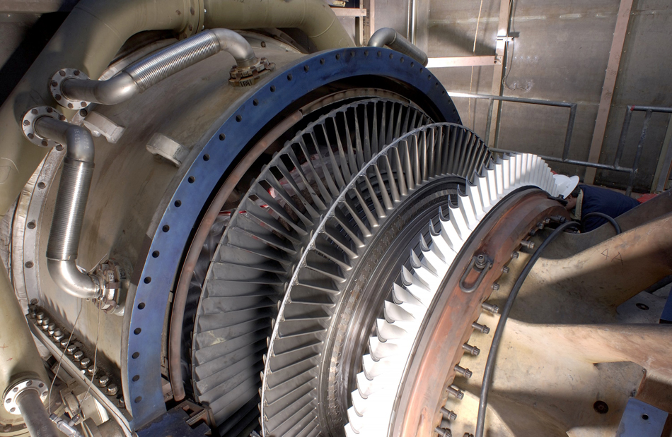
Generators illustrated in this section look very much like the motors illustrated previously. This is not coincidental. In fact, a motor becomes a generator when its shaft rotates. Certain early automobiles used their starter motor as a generator. In Back Emf, we shall further explore the action of a motor as a generator.
where \(A\) is the area of an \(N\)-turn coil rotated at a constant angular velocity ω in a uniform magnetic field \(B\).
📖 OpenStax College Physics, Section 23.8. openstax.org · CC BY 4.0
- Explain what back emf is and how it is induced.
It has been noted that motors and generators are very similar. Generators convert mechanical energy into electrical energy, whereas motors convert electrical energy into mechanical energy. Furthermore, motors and generators have the same construction. When the coil of a motor is turned, magnetic flux changes, and an emf (consistent with Faraday’s law of induction) is induced. The motor thus acts as a generator whenever its coil rotates. This will happen whether the shaft is turned by an external input, like a belt drive, or by the action of the motor itself. That is, when a motor is doing work and its shaft is turning, an emf is generated. Lenz’s law tells us the emf opposes any change, so that the input emf that powers the motor will be opposed by the motor’s self-generated emf, called theback emfof the motor. (See Figure 1.)
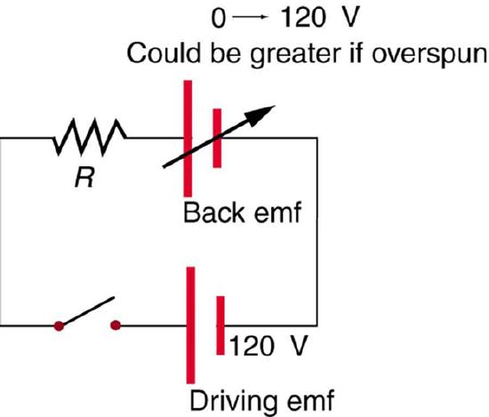
Back emf is the generator output of a motor, and so it is proportional to the motor’s angular velocity \(\omega\). It is zero when the motor is first turned on, meaning that the coil receives the full driving voltage and the motor draws maximum current when it is on but not turning. As the motor turns faster and faster, the back emf grows, always opposing the driving emf, and reduces the voltage across the coil and the amount of current it draws. This effect is noticeable in a number of situations. When a vacuum cleaner, refrigerator, or washing machine is first turned on, lights in the same circuit dim briefly due to the \(IR\) drop produced in feeder lines by the large current drawn by the motor. When a motor first comes on, it draws more current than when it runs at its normal operating speed. When a mechanical load is placed on the motor, like an electric wheelchair going up a hill, the motor slows, the back emf drops, more current flows, and more work can be done. If the motor runs at too low a speed, the larger current can overheat it (via resistive power in the coil, \(P = I^{2}R\)), perhaps even burning it out. On the other hand, if there is no mechanical load on the motor, it will increase its angular velocity \(\omega\) until the back emf is nearly equal to the driving emf. Then the motor uses only enough energy to overcome friction.
Consider, for example, the motor coils represented in Figure 1. The coils have a \(0.400 \Omega\) equivalent resistance and are driven by a 48.0 V emf. Shortly after being turned on, they draw a current \(I = V/R = \left(48.0 V\right)/\left(0.400 \Omega \right) = 120 A\) and, thus, dissipate \(P = I^{2}R = 5.67 kW\) of energy as heat transfer. Under normal operating conditions for this motor, suppose the back emf is 40.0 V. Then at operating speed, the total voltage across the coils is 8.0 V (48.0 V minus the 40.0 V back emf), and the current drawn is \(I = V/R = \left(8.0 V\right) / \left(0.400 \Omega \right) = 20 A\). Under normal load, then, the power dissipated is \(P = IV = \left(20A \right) / \left( 8.0V \right) = 160 W\). The latter will not cause a problem for this motor, whereas the former 5.76 kW would burn out the coils if sustained.
the emf generated by a running motor, because it consists of a coil turning in a magnetic field; it opposes the voltage powering the motor
📖 OpenStax College Physics, Section 23.9. openstax.org · CC BY 4.0
- Explain how a transformer works.
- Calculate voltage, current, and/or number of turns given the other quantities.
Transformersdo what their name implies—they transform voltages from one value to another (The term voltage is used rather than emf, because transformers have internal resistance). For example, many cell phones, laptops, video games, and power tools and small appliances have a transformer built into their plug-in unit (like that in Figure that changes 120 V or 240 V AC into whatever voltage the device uses.
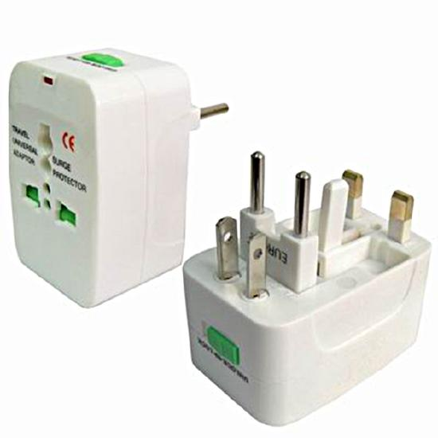
Transformers are also used at several points in the power distribution systems, such as illustrated in Figure . Power is sent long distances at high voltages, because less current is required for a given amount of power, and this means less line loss, as was discussed previously. But high voltages pose greater hazards, so that transformers are employed to produce lower voltage at the user’s location.
![The figure shows a transmission power system. It shows the various stages in a power transmission system from the power plant to the house hold with the help of images. The first image is of a power plant. The voltage generated is at twelve volts. This voltage is shown to pass on to a step up transformer through cables. From the step up transformer the current passes through a high voltage transmission line at four hundred kilo volt. The high voltage transmission line is shown passing on three towers. The current is then passed to a step down transformer substation. The current is step down to twelve volts. This is now passed through power transmission lines on poles. This current reaches a step down transformer which is fixed on a pole. Here the voltage is further stepped down to two hundred forty volts. Current is then supplied to an individual household at two hundred forty volts.](images/ch23/fig23-36-the-figure-shows-a-transmission-power-sy.jpg)
The type of transformer considered in this text (Figure is based on Faraday’s law of induction and is very similar in construction to the apparatus Faraday used to demonstrate magnetic fields could cause currents. The two coils are called theprimaryandsecondary coils. In normal use, the input voltage is placed on the primary, and the secondary produces the transformed output voltage. Not only does the iron core trap the magnetic field created by the primary coil, its magnetization increases the field strength. Since the input voltage is AC, a time-varying magnetic flux is sent to the secondary, inducing its AC output voltage.
![The figure shows a simple transformer with two coils wound on either sides of a laminated ferromagnetic core. The set of coil on left side of the core is marked as the primary and there number is given as N p. The voltage across the primary is given by V p. The set of coil on right side of the core is marked as the secondary and there number is represented as N s. The voltage across the secondary is given by V s. A symbol of the transformer is also shown below the diagram. It consists of two inductor coils separated by two equal parallel lines representing the core.](images/ch23/fig23-37-the-figure-shows-a-simple-transformer-wi.jpg)
For the simple transformer shown in Figure , the output voltage \(V_{s}\) depends almost entirely on the input voltage \(V_{p}\) and the ratio of the number of loops in the primary and secondary coils. Faraday’s law of induction for the secondary coil gives its induced output voltage \(V_{s}\) to be
where \(N_{s}\) is the number of loops in the secondary coil and \(\Delta \Phi / \Delta t\) is the rate of change of magnetic flux. Note that the output voltage equals the induced emf (\(V_{s} = emf_{s}\)), provided coil resistance is small (a reasonable assumption for transformers). The cross-sectional area of the coils is the same on either side, as is the magnetic field strength, and so \(\Delta \Phi / \Delta t\) is the same on either side. The input primary voltage \(V_{p}\) is also related to changing flux by
The reason for this is a little more subtle. Lenz’s law tells us that the primary coil opposes the change in flux caused by the input voltage \(V_{p}\), hence the minus sign (This is an example ofself-inductance, a topic to be explored in some detail in later sections). Assuming negligible coil resistance, Kirchhoff’s loop rule tells us that the induced emf exactly equals the input voltage. Taking the ratio of these last two equations yields a useful relationship:
This is known as thetransformer equation, and it simply states that the ratio of the secondary to primary voltages in a transformer equals the ratio of the number of loops in their coils.
The output voltage of a transformer can be less than, greater than, or equal to the input voltage, depending on the ratio of the number of loops in their coils. Some transformers even provide a variable output by allowing connection to be made at different points on the secondary coil. Astep-up transformeris one that increases voltage, whereas astep-down transformerdecreases voltage. Assuming, as we have, that resistance is negligible, the electrical power output of a transformer equals its input. This is nearly true in practice—transformer efficiency often exceeds 99%. Equating the power input and output,
Rearranging terms gives
Combining this with Equation \ref{23.8.3} , we find that
is the relationship between the output and input currents of a transformer. So if voltage increases, current decreases. Conversely, if voltage decreases, current increases.
A portable x-ray unit has a step-up transformer, the 120 V input of which is transformed to the 100 kV output needed by the x-ray tube. The primary has 50 loops and draws a current of 10.00 A when in use. (a) What is the number of loops in the secondary? (b) Find the current output of the secondary.
Strategy and Solution for (a):
We solve Equation \ref{23.8.3} for \(N_{s}\), the number of loops in the secondary, and enter the known values. This gives
A large number of loops in the secondary (compared with the primary) is required to produce such a large voltage. This would be true for neon sign transformers and those supplying high voltage inside TVs and CRTs.
Strategy and Solution for (b):
We can similarly find the output current of the secondary by solving Equation \ref{23.8.7} and \(I_{s}\) and entering known values. This gives
As expected, the current output is significantly less than the input. In certain spectacular demonstrations, very large voltages are used to produce long arcs, but they are relatively safe because the transformer output does not supply a large current. Note that the power input here is
This equals the power output
as we assumed in the derivation of the equations used.
The fact that transformers are based on Faraday’s law of induction makes it clear why we cannot use transformers to change DC voltages. If there is no change in primary voltage, there is no voltage induced in the secondary. One possibility is to connect DC to the primary coil through a switch. As the switch is opened and closed, the secondary produces a voltage like that in Figure . This is not really a practical alternative, and AC is in common use wherever it is necessary to increase or decrease voltages.
![The first part of the figure shows a graph of DC voltage input. The graph shows a variation of voltage V p along the Y axis and time t along the X axis. The wave is a pulsed wave nearly square in nature with the vibrations only in positive half cycle. The negative half cycles are not present in the wave. The second part of the figure shows a spike wave graph. The graph shows a variation of voltage V s along the Y axis and time t along the X axis. The wave has both positive and negative half cycles shown as sharp spikes of uniform amplitude.](images/ch23/fig23-38-the-first-part-of-the-figure-shows-a-gra.jpg)
A battery charger meant for a series connection of ten nickel-cadmium batteries (total emf of 12.5 V DC) needs to have a 15.0 V output to charge the batteries. It uses a step-down transformer with a 200-loop primary and a 120 V input. (a) How many loops should there be in the secondary coil? (b) If the charging current is 16.0 A, what is the input current?
Strategy and Solution for (a):
You would expect the secondary to have a small number of loops. Solving Equation \ref{23.8.3} for \(N_{s}\) and entering known values gives
Strategy and Solution for (b):
The current input can be obtained by solving Equation \ref{23.8.7} for \(I_{p}\) and entering known values. This gives
The number of loops in the secondary is small, as expected for a step-down transformer. We also see that a small input current produces a larger output current in a step-down transformer. When transformers are used to operate large magnets, they sometimes have a small number of very heavy loops in the secondary. This allows the secondary to have low internal resistance and produce large currents. Note again that this solution is based on the assumption of 100% efficiency—or power out equals power in (\(P_{p} = P_{s}\))-- reasonable for good transformers. In this case the primary and secondary power is 240 W. (Verify this for yourself as a consistency check.) Note that the Ni-Cd batteries need to be charged from a DC power source (as would a 12 V battery). So the AC output of the secondary coil needs to be converted into DC. This is done using something called a rectifier, which uses devices called diodes that allow only a one-way flow of current.
Transformers have many applications in electrical safety systems, which are discussed in 23.9.
PHET EXPLORATIONS:GENERATOR
Generate electricity with a bar magnet! Discover the physics behind the phenomena by exploring magnets and how you can use them to make a bulb light.
📖 OpenStax College Physics, Section 23.10. openstax.org · CC BY 4.0
- Explain how various modern safety features in electric circuits work, with an emphasis on how induction is employed.
Electricity has two hazards. Athermal hazardoccurs when there is electrical overheating. Ashock hazardoccurs when electric current passes through a person. Both hazards have already been discussed. Here we will concentrate on systems and devices that prevent electrical hazards.
Figure 1 shows the schematic for a simple AC circuit with no safety features. This is not how power is distributed in practice. Modern household and industrial wiring requires thethree-wire system, shown schematically in Figure 2, which has several safety features. First is the familiarcircuit breaker(orfuse) to prevent thermal overload. Second, there is a protectivecasearound the appliance, such as a toaster or refrigerator. The case’s safety feature is that it prevents a person from touching exposed wires and coming into electrical contact with the circuit, helping prevent shocks.
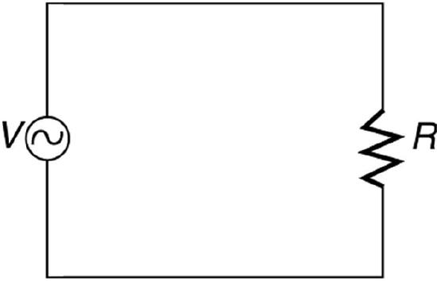
![The figure describes an appliance connected to an AC source. One end of the AC circuit is connected to a circuit breaker. The other end of the circuit breaker is connected to an appliance. The appliance is shown as a resistance enclosed in a rectangular case represented as the case of appliance. The other end of the resistance is connected back to the AC source through a connecting wire. The application case, the connecting wire and the A C source are grounded. The ground terminal marked at the appliance case is marked as Green or ground and the ground terminal of AC source and connecting wires are marked as alternate return path to earth.](images/ch23/fig23-41-the-figure-describes-an-appliance-connec.jpg)
There arethree connections to earth or ground(hereafter referred to as “earth/ground”) shown in Figure 2. Recall that an earth/ground connection is a low-resistance path directly to the earth. The two earth/ground connections on theneutral wireforce it to be at zero volts relative to the earth, giving the wire its name. This wire is therefore safe to touch even if its insulation, usually white, is missing. The neutral wire is the return path for the current to follow to complete the circuit. Furthermore, the two earth/ground connections supply an alternative path through the earth, a good conductor, to complete the circuit. The earth/ground connection closest to the power source could be at the generating plant, while the other is at the user’s location. The third earth/ground is to the case of the appliance, through the greenearth/ground wire, forcing the case, too, to be at zero volts. Theliveorhot wire(hereafter referred to as “live/hot”) supplies voltage and current to operate the appliance. Figure 3 shows a more pictorial version of how the three-wire system is connected through a three-prong plug to an appliance.
![The figure shows an appliance with a three prong plug connected to a three hole outlet. The circuit on the other side of the three hole outlet is also shown. The latter circuit consists of an alternating AC voltage source, V, with one end connected to a circuit breaker, which in turn is connected to a wire labeled black or hot. The other end of the A C voltage source is grounded with a wire labeled white or neutral. The black and white wires go from the A C source to two separate points on the three hole outlet. The third point of the three hole outlet is directly connected to the ground with a wire labeled green. The three wires end at the three hole outlet. The three prong plug is connected to this three hole outlet and the three wires black, white and green are shown to emerge out as the cord of the appliance and are shown connected to the appliance. The appliance is shown as a resistance enclosed in a rectangular case called the case of appliance. The black wire is connected to one end of the resistance. The white wire is connected to the other end of the resistance. The case of the appliance is connected to the green wire.](images/ch23/fig23-42-the-figure-shows-an-appliance-with-a-thr.jpg)
A note on insulation color-coding: Insulating plastic is color-coded to identify live/hot, neutral and ground wires but these codes vary around the world. Live/hot wires may be brown, red, black, blue or grey. Neutral wire may be blue, black or white. Since the same color may be used for live/hot or neutral in different parts of the world, it is essential to determine the color code in your region. The only exception is the earth/ground wire which is often green but may be yellow or just bare wire. Striped coatings are sometimes used for the benefit of those who are colorblind.
The three-wire system replaced the older two-wire system, which lacks an earth/ground wire. Under ordinary circumstances, insulation on the live/hot and neutral wires prevents the case from being directly in the circuit, so that the earth/ground wire may seem like double protection. Grounding the case solves more than one problem, however. The simplest problem is worn insulation on the live/hot wire that allows it to contact the case, as shown in Figure 4 Lacking an earth/ground connection (some people cut the third prong off the plug because they only have outdated two hole receptacles), a severe shock is possible. This is particularly dangerous in the kitchen, where a good connection to earth/ground is available through water on the floor or a water faucet. With the earth/ground connection intact, the circuit breaker will trip, forcing repair of the appliance. Why are some appliances still sold with two-prong plugs? These have nonconducting cases, such as power tools with impact resistant plastic cases, and are calleddoubly insulated. Modern two-prong plugs can be inserted into the asymmetric standard outlet in only one way, to ensure proper connection of live/hot and neutral wires.
![Part a of the figure describes an appliance connected to an AC source. One end of the AC circuit is connected to a circuit breaker. The other end of the circuit breaker is connected to the appliance. The appliance is shown as a resistance enclosed in a rectangular metal case. The case of application is shown to have a point where it is in contact with the hot wire from AC source due to lack of insulation. The other end of the resistance is connected back to the AC source through a connecting wire. The connecting wire and the A C source are grounded. The ground terminal at the appliance case is shown as broken. A person is shown to hold one hand on the appliance case and another hand on tap connection pipeline carrying water. The high voltage is shown to flow from the insulation damaged live wire to the metal case of the appliance to the person in contact with the appliance case, then through him and to the pipe line and then back to ground. The person is shown to receive a severe shock.](images/ch23/fig23-43-part-a-of-the-figure-describes-an-applia.jpg)
Electromagnetic induction causes a more subtle problem that is solved by grounding the case. The AC current in appliances can induce an emf on the case. If grounded, the case voltage is kept near zero, but if the case is not grounded, a shock can occur as pictured in Figure 5 Current driven by the induced case emf is called aleakage current, although current does not necessarily pass from the resistor to the case.
![The figure describes an appliance connected to an AC source. One end of the AC circuit is connected to a circuit breaker. The other end of the circuit breaker is connected to an appliance. The appliance is shown as a resistance enclosed in a rectangular metal case known as the case of appliance. The other end of the resistance is connected back to the AC source through a connecting wire. The connecting wire and the A C source are grounded. The ground terminal at the appliance case is shown as broken. A person is shown holding one hand on the appliance case and the other hand free. Due to the current in the appliance I app, there is an induced e m f in the appliance case. This is shown as leakage current which is shown to flow through the person in contact with the appliance and back to the ground. This current is termed I leak.](images/ch23/fig23-44-the-figure-describes-an-appliance-connec.jpg)
Aground fault interrupter(GFI) is a safety device found in updated kitchen and bathroom wiring that works based on electromagnetic induction. GFIs compare the currents in the live/hot and neutral wires. When live/hot and neutral currents are not equal, it is almost always because current in the neutral is less than in the live/hot wire. Then some of the current, again called a leakage current, is returning to the voltage source by a path other than through the neutral wire. It is assumed that this path presents a hazard, such as shown in Figure 6. GFIs are usually set to interrupt the circuit if the leakage current is greater than 5 mA, the accepted maximum harmless shock. Even if the leakage current goes safely to earth/ground through an intact earth/ground wire, the GFI will trip, forcing repair of the leakage.
![The figure describes a ground fault interrupter device connected across the hot or live and neural wires of an AC circuit. The ground fault interrupter device is shown as a rectangular block connected to a coil wound on a ring shaped iron core. The terminals of AC source are connected to an appliance shown as a resistance in a appliance case. The grounding of the appliance is shown broken. A person in contact with the appliance case is also shown. A leakage current I leak is shown to flow through him to the ground. The current I minus I leak flows back to the A C terminals. The leakage current here follows a hazardous path.](images/ch23/fig23-45-the-figure-describes-a-ground-fault-inte.jpg)
Figure 7 shows how a GFI works. If the currents in the live/hot and neutral wires are equal, then they induce equal and opposite emfs in the coil. If not, then the circuit breaker will trip.
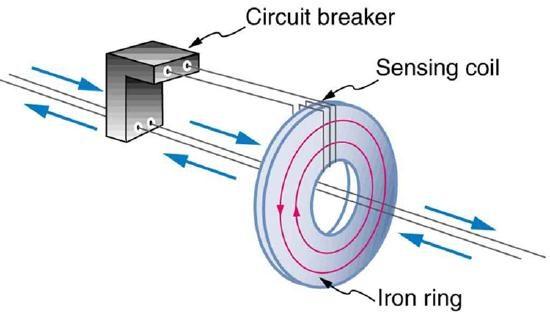
Another induction-based safety device is theisolation transformer, shown in Figure 8. Most isolation transformers have equal input and output voltages. Their function is to put a large resistance between the original voltage source and the device being operated. This prevents a complete circuit between them, even in the circumstance shown. There is a complete circuit through the appliance. But there is not a complete circuit for current to flow through the person in the figure, who is touching only one of the transformer’s output wires, and neither output wire is grounded. The appliance is isolated from the original voltage source by the high resistance of the material between the transformer coils, hence the name isolation transformer. For current to flow through the person, it must pass through the high-resistance material between the coils, through the wire, the person, and back through the earth—a path with such a large resistance that the current is negligible.
![The figure shows an A C source, one end of which is connected to earth and the other end is connected to a circuit breaker. The other end of the circuit breaker is connected to the primary of an isolation transformer. The secondary of the transformer is connected to an appliance shown as a resistance enclosed in a case. The current is shown to flow through the appliance. A person is shown in contact with the appliance. He is safe as the transformer induces a high resistance between the original voltage source and the device.](images/ch23/fig23-47-the-figure-shows-an-a-c-source-one-end-o.jpg)
The basics of electrical safety presented here help prevent many electrical hazards. Electrical safety can be pursued to greater depths. There are, for example, problems related to different earth/ground connections for appliances in close proximity. Many other examples are found in hospitals. Microshock-sensitive patients, for instance, require special protection. For these people, currents as low as 0.1 mA may cause ventricular fibrillation. The interested reader can use the material presented here as a basis for further study.
📖 OpenStax College Physics, Section 23.11. openstax.org · CC BY 4.0
- Calculate the inductance of an inductor.
- Calculate the energy stored in an inductor.
- Calculate the emf generated in an inductor.
Induction is the process in which an emf is induced by changing magnetic flux. Many examples have been discussed so far, some more effective than others. Transformers, for example, are designed to be particularly effective at inducing a desired voltage and current with very little loss of energy to other forms. Is there a useful physical quantity related to how “effective” a given device is? The answer is yes, and that physical quantity is calledinductance.
Mutual inductanceis the effect of Faraday’s law of induction for one device upon another, such as the primary coil in transmitting energy to the secondary in a transformer. SeeFigure, where simple coils induce emfs in one another.
![The figure shows two coils coil one, of five turns and coil two, of four turns are kept adjacent to each other. The magnetic field lines of strength B are shown to pass through the two coils. Coil one is shown to be connected to an A C source. The changing current in the coil one is given as I one in clock wise direction. Coil two is connected to a galvanometer. A change in current in coil one is shown to induce an e m f in coil two.The induced e m f in coil two is measured as a deflection in galvanometer.](images/ch23/fig23-48-the-figure-shows-two-coils-coil-one-of-f.jpg)
In the many cases where the geometry of the devices is fixed, flux is changed by varying current. We therefore concentrate on the rate of change of current, \(\Delta I/\delta t\), as the cause of induction. A change in the current \(I_1\) in one device, coil 1 in the figure, induces an \(I_2\) in the other. We express this in equation form as
\[emf_2 = - M\dfrac{\Delta I_1}{\Delta t},\] where \(M\) is defined to be the mutual inductance between the two devices. The minus sign is an expression of Lenz’s law. The larger the mutual inductance \(M\), the more effective the coupling. For example, the coils inFigurehave a small \(M\) compared with the transformer coils in[link]. Units for \(M\) are (V\cdot s)/A = \Omega \cdot s\), which is named ahenry(H), after Joseph Henry. That is, \(1 \, H = 1 \, \Omega \cdot s\).
Nature is symmetric here. If we change the current \(I_2\) in coil 2, we induce an \(emf_1\) in coil 1, which is given by
\[emf_1 = -M \dfrac{\Delta I_2}{\Delta t},\] where \(M\) is the same as for the reverse process. Transformers run backward with the same effectiveness, or mutual inductance \(M\).
A large mutual inductance \(M\) may or may not be desirable. We want a transformer to have a large mutual inductance. But an appliance, such as an electric clothes dryer, can induce a dangerous emf on its case if the mutual inductance between its coils and the case is large. One way to reduce mutual inductance \(M\) is to counterwind coils to cancel the magnetic field produced. (SeeFigure.)
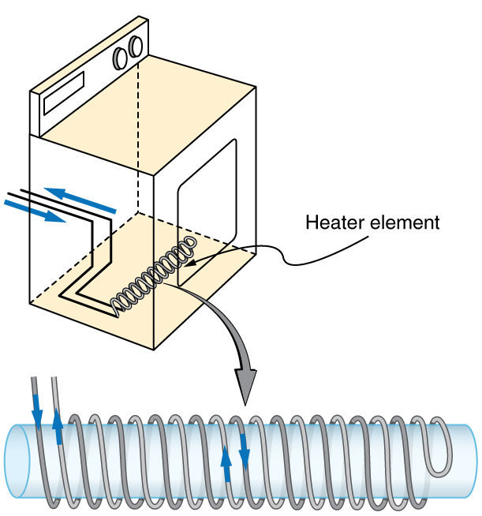
Self-inductance, the effect of Faraday’s law of induction of a device on itself, also exists. When, for example, current through a coil is increased, the magnetic field and flux also increase, inducing a counter emf, as required by Lenz’s law. Conversely, if the current is decreased, an emf is induced that opposes the decrease. Most devices have a fixed geometry, and so the change in flux is due entirely to the change in current \(\Delta I\) through the device. The induced emf is related to the physical geometry of the device and the rate of change of current. It is given by
\[emf = -L \dfrac{\Delta I}{\Delta t},\] where \(L\) is the self-inductance of the device. A device that exhibits significant self-inductance is called aninductor, and given the symbol inFigure.
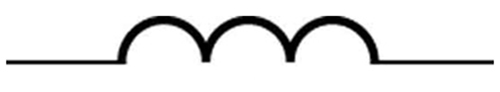
The minus sign is an expression of Lenz’s law, indicating that emf opposes the change in current. Units of self-inductance are henries (H) just as for mutual inductance. The larger the self-inductance \(L\) of a device, the greater its opposition to any change in current through it. For example, a large coil with many turns and an iron core has a large \(L\) and will not allow current to change quickly. To avoid this effect, a smal \(L\) must be achieved, such as by counterwinding coils as inFigure.
A 1 H inductor is a large inductor. To illustrate this, consider a device with \(L = 1.0 \, H\) that has a 10 A current flowing through it. What happens if we try to shut off the current rapidly, perhaps in only 1.0 ms? An emf, given by \(emf = -L(\Delta I/\Delta t)\), will oppose the change. Thus an emf will be induced given by \(emf = -L(\Delta I/\Delta t) = (1.0 \, H)[(10 \, A)/(1.0 \, ms)] = 10,000 \, V\). The positive sign means this large voltage is in the same direction as the current, opposing its decrease. Such large emfs can cause arcs, damaging switching equipment, and so it may be necessary to change current more slowly.
There are uses for such a large induced voltage. Camera flashes use a battery, two inductors that function as a transformer, and a switching system or oscillator to induce large voltages. (Remember that we need a changing magnetic field, brought about by a changing current, to induce a voltage in another coil.) The oscillator system will do this many times as the battery voltage is boosted to over one thousand volts. (You may hear the high pitched whine from the transformer as the capacitor is being charged.) A capacitor stores the high voltage for later use in powering the flash. (SeeFigure.)
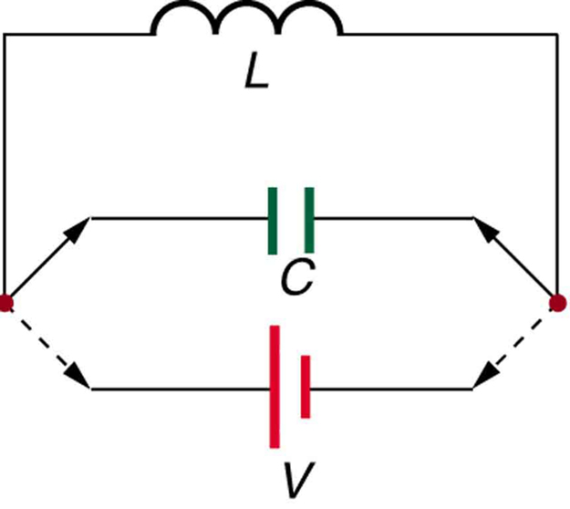
It is possible to calculate \(L\) for an inductor given its geometry (size and shape) and knowing the magnetic field that it produces. This is difficult in most cases, because of the complexity of the field created. So in this text the inductance \(L\) is usually a given quantity. One exception is the solenoid, because it has a very uniform field inside, a nearly zero field outside, and a simple shape. It is instructive to derive an equation for its inductance. We start by noting that the induced emf is given by Faraday’s law of induction as \(emf = -N(\Delta \Phi /\Delta t)\) and, by the definition of self-inductance, as \(emf = -L(\Delta I/\Delta t)\). Equating these yields
Solving for \(L\) gives \[L = N\dfrac{\Delta \Phi}{\Delta I}.\]
This equation for the self-inductance \(L\) of a device is always valid. It means that self-inductance \(L\) depends on how effective the current is in creating flux; the more effective, the greater \(\Delta \phi /\Delta I\) is.
Let us use this last equation to find an expression for the inductance of a solenoid. Since the area \(A\) of a solenoid is fixed, the change in flux is \(\Delta \Phi = \Delta (BA) = A\Delta B\). To find \(\Delta B\), we note that the magnetic field of a solenoid is given by \(B = \mu_0 n I = \mu_0 \frac{\Delta I}{l}\). (Here \(n = N/l\), where \(N\) is the number of coils and is the solenoid’s length.) Only the current changes, so that \(\Delta \Phi = A \delta B= \mu_0 NA \frac{\Delta I}{l}\). Substituting \(\Delta \Phi\) into \(L = N \frac{\Delta \Phi}{\Delta I}\) gives
This simplifies to \[L = \dfrac{\mu_0 N^2 A}{l} (solenoid).\]
This is the self-inductance of a solenoid of cross-sectional area \(A\) and length \(l\). Note that the inductance depends only on the physical characteristics of the solenoid, consistent with its definition.
Calculate the self-inductance of a 10.0 cm long, 4.00 cm diameter solenoid that has 200 coils.
This is a straightforward application of \(L = \frac{\mu_0 N^2 A}{l}\), since all quantities in the equation except \(L\) are known.
Use the following expression for the self-inductance of a solenoid:
The cross-sectional area in this example is \(A = \pi r^2 = (3.14...)(0.0200 \, m)^2 = 1.26 \times 10^{-3} \, m^2\), \(N\) is given to be 200, and the length \(l\) is 0.100 m. We know the permeability of free space is \(\mu_0 = 4\pi \times 10^{-7} \, T \cdot m/A\). Substituting these into the expression for \(L\) gives
This solenoid is moderate in size. Its inductance of nearly a millihenry is also considered moderate.
One common application of inductance is used in traffic lights that can tell when vehicles are waiting at the intersection. An electrical circuit with an inductor is placed in the road under the place a waiting car will stop over. The body of the car increases the inductance and the circuit changes sending a signal to the traffic lights to change colors. Similarly, metal detectors used for airport security employ the same technique. A coil or inductor in the metal detector frame acts as both a transmitter and a receiver. The pulsed signal in the transmitter coil induces a signal in the receiver. The self-inductance of the circuit is affected by any metal object in the path. Such detectors can be adjusted for sensitivity and also can indicate the approximate location of metal found on a person. (But they will not be able to detect any plastic explosive such as that found on the “underwear bomber.”) SeeFigure.
We know from Lenz’s law that inductances oppose changes in current. There is an alternative way to look at this opposition that is based on energy. Energy is stored in a magnetic field. It takes time to build up energy, and it also takes time to deplete energy; hence, there is an opposition to rapid change. In an inductor, the magnetic field is directly proportional to current and to the inductance of the device. It can be shown that theenergystored in an inductor\( E_{ind}\) is given by
This expression is similar to that for the energy stored in a capacitor.
Example: Calculating the Energy Stored in the Field of a Solenoid
How much energy is stored in the 0.632 mH inductor of the preceding example when a 30.0 A current flows through it?
The energy is given by the equation \(E_{ind} = \frac{1}{2}LI^2\), and all quantities except \(E_{ind}\) are known.
Substituting the value for \(L\) found in the previous example and the given current into \(E_{ind} = \frac{1}{2}LI^2\) gives
This amount of energy is certainly enough to cause a spark if the current is suddenly switched off. It cannot be built up instantaneously unless the power input is infinite.
Paul Peter Urone (Professor Emeritus at California State University, Sacramento) and Roger Hinrichs (State University of New York, College at Oswego) with Contributing Authors: Kim Dirks (University of Auckland) and Manjula Sharma (University of Sydney). This work is licensed by OpenStax University Physics under aCreative Commons Attribution License (by 4.0).
Paul Peter Urone (Professor Emeritus at California State University, Sacramento) and Roger Hinrichs (State University of New York, College at Oswego) with Contributing Authors: Kim Dirks (University of Auckland) and Manjula Sharma (University of Sydney). This work is licensed by OpenStax University Physics under aCreative Commons Attribution License (by 4.0).
📖 OpenStax College Physics, Section 23.12. openstax.org · CC BY 4.0
| Section | Title |
|---|---|
| 23.1 | 23.1: RL Circuits |
| 23.2 | 23.2: Reactance, Inductive and Capacitive |
| 23.3 | 23.3: RLC Series AC Circuits |
| 23.4 | 23.4: Induced Emf and Magnetic Flux |
| 23.5 | 23.5: Faraday’s Law of Induction- Lenz’s Law |
| 23.6 | 23.6: Motional Emf |
| 23.7 | 23.7: Eddy Currents and Magnetic Damping |
| 23.8 | 23.8: Electric Generators |
| 23.9 | 23.9: Back Emf |
| 23.10 | 23.10: Transformers |
| 23.11 | 23.11: Electrical Safety - Systems and Devices |
| 23.12 | 23.12: Inductance |